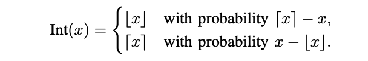

9 Ottimizzazioni dei Modelli
Risorse: Slide, Video, Esercizi, Laboratori

Quando i modelli di apprendimento automatico vengono distribuiti su sistemi, in particolare su sistemi embedded con risorse limitate, l’ottimizzazione dei modelli è una necessità. Mentre il machine learning richiede spesso risorse computazionali sostanziali, i sistemi sono intrinsecamente limitati in termini di memoria, potenza di elaborazione ed energia. Questo capitolo si immergerà nell’arte e nella scienza dell’ottimizzazione dei modelli di machine learning per garantire che siano leggeri, efficienti ed efficaci quando distribuiti in scenari TinyML.
Apprendere tecniche come “pruning”, “knowledge distillation” e architetture di modelli specializzate per rappresentare i modelli in modo più efficiente
Comprendere i metodi di quantizzazione per ridurre le dimensioni del modello e consentire un’inferenza più rapida tramite numeri con precisione ridotta
Esplorare approcci di ottimizzazione basati sull’hardware per abbinare i modelli alle capacità del dispositivo target
Sviluppare un pensiero olistico per bilanciare i compromessi in termini di complessità del modello, accuratezza, latenza, potenza ecc. in base ai requisiti dell’applicazione
Scoprire strumenti software come framework e piattaforme di conversione del modello che consentono l’implementazione di modelli ottimizzati
Ottenere informazioni strategiche sulla selezione e l’applicazione di ottimizzazioni del modello in base ai vincoli del caso d’uso e ai target hardware
9.1 Introduzione
Abbiamo strutturato questo capitolo in tre livelli. Innanzitutto, in Sezione 9.2 esaminiamo l’importanza e le metodologie per ridurre la complessità dei parametri dei modelli senza compromettere le loro capacità di inferenza. Vengono discusse tecniche come il “pruning” [potatura] e la distillazione della conoscenza, offrendo spunti su come i modelli possono essere compressi e semplificati mantenendo, o addirittura migliorando, le loro prestazioni.
Scendendo di un livello, in Sezione 9.3, studiamo il ruolo della precisione numerica nei calcoli dei modelli e come la sua modifica influisce sulle sue dimensioni, velocità e precisione. Esamineremo i vari formati numerici e come l’aritmetica a precisione ridotta può essere sfruttata per ottimizzare i modelli per la distribuzione embedded.
Infine, man mano che scendiamo più in basso e ci avviciniamo all’hardware, in Sezione 9.4, esploreremo il panorama della progettazione congiunta hardware-software, esplorando come i modelli possono essere ottimizzati adattandoli alle caratteristiche e alle capacità specifiche dell’hardware target. Discuteremo di come i modelli possono essere adattati per sfruttare efficacemente le risorse hardware disponibili.

9.2 Rappresentazione Efficiente del Modello
Il primo passo per l’ottimizzazione del modello inizia in un territorio familiare per la maggior parte dei professionisti del ML: la rappresentazione efficiente del modello viene spesso affrontata per la prima volta al livello più alto di astrazione della parametrizzazione, ovvero l’architettura stessa del modello.
La maggior parte dei professionisti del ML tradizionali progetta modelli con un obiettivo generale di alto livello in mente, che si tratti di classificazione delle immagini, rilevamento di persone o individuazione di parole chiave come menzionato in precedenza in questo testo. I loro progetti in genere finiscono per adattarsi naturalmente ad alcuni vincoli soft dovuti a risorse di elaborazione limitate durante lo sviluppo, ma in genere questi progetti non sono a conoscenza di vincoli successivi, come quelli richiesti se il modello deve essere distribuito su un dispositivo più limitato anziché sul cloud.
In questa sezione, discuteremo di come i professionisti possono sfruttare i principi della progettazione congiunta hardware-software anche nell’architettura di alto livello di un modello per rendere i loro modelli compatibili con i dispositivi edge. Da quelli più consapevoli dell’hardware a quelli meno consapevoli a questo livello di modifica, discutiamo alcune delle strategie più comuni per una parametrizzazione efficiente del modello: pruning, compressione e architetture edge-friendly. Abbiamo già parlato di pruning e compressione del modello in Sezione 8.4; questa sezione andrà oltre le definizioni per fornire una comprensione tecnica del loro funzionamento.
9.2.1 Il Pruning
Panoramica
Il model pruning [potatura] è una tecnica di apprendimento automatico che riduce le dimensioni e la complessità di un modello di rete neurale, mantenendone il più possibile le capacità predittive. L’obiettivo della potatura è quello di rimuovere componenti ridondanti o non essenziali del modello, tra cui connessioni tra neuroni, singoli neuroni o persino interi layer della rete.
Questo processo in genere comporta l’analisi del modello di machine learning per identificare e rimuovere pesi, nodi o layer che hanno scarso impatto sugli output del modello. Potando selettivamente un modello in questo modo, il numero totale di parametri può essere ridotto in modo significativo senza cali sostanziali nell’accuratezza del modello. Il modello compresso risultante richiede meno memoria e risorse di calcolo per l’addestramento e l’esecuzione, consentendo tempi di inferenza più rapidi.
Il pruning del modello è particolarmente utile quando si distribuiscono modelli di apprendimento automatico su dispositivi con risorse di calcolo limitate, come telefoni cellulari o sistemi TinyML. La tecnica facilita la distribuzione di modelli più grandi e complessi su questi dispositivi riducendo le loro richieste di risorse. Inoltre, i modelli più piccoli richiedono meno dati per generalizzare bene e sono meno inclini all’overfitting [sovradattamento]. Fornendo un modo efficiente per semplificare i modelli, la potatura dei modelli è diventata una tecnica fondamentale per ottimizzare le reti neurali nell’apprendimento automatico.
Esistono diverse tecniche di potatura comuni utilizzate nell’apprendimento automatico, tra cui la potatura strutturata, la potatura non strutturata, la potatura iterativa, la potatura bayesiana e persino la potatura casuale. Oltre a potare i pesi, si possono anche potare le attivazioni. La potatura di attivazioni prende di mira specificamente neuroni o filtri che si attivano raramente o hanno un’attivazione complessivamente bassa. Esistono numerosi altri metodi, come la potatura di sensibilità e movimento. Per un elenco completo dei metodi, si consiglia al lettore di leggere il seguente articolo: “A Survey on Deep Neural Network Pruning: Taxonomy, Comparison, Analysis, and Recommendations” (2023).
Quindi, come si scelgono i metodi di potatura? Esistono molte varianti di tecniche di potatura, ciascuna delle quali varia l’euristica di ciò che dovrebbe essere mantenuto e potato dal modello, nonché il numero di volte in cui cui deve essere eseguita. Tradizionalmente, la potatura avviene dopo che il modello è completamente addestrato, dove il modello potato può subire una lieve perdita di accuratezza. Tuttavia, come discuteremo più avanti, recenti scoperte hanno trovato che la potatura può essere utilizzata durante l’addestramento (ad esempio, in modo iterativo) per identificare rappresentazioni del modello più efficienti e accurate.
Potatura Strutturata
Iniziamo con la “potatura strutturata”, una tecnica che riduce le dimensioni di una rete neurale eliminando intere sotto-strutture specifiche del modello mantenendone la struttura generale. Rimuove interi neuroni/canali o layer in base a criteri di importanza. Ad esempio, per una rete neurale convoluzionale (CNN), potrebbero essere determinate istanze di filtro o canali. Per reti completamente connesse, potrebbero essere i neuroni stessi mantenendo la piena connettività o persino l’eliminazione di interi layer del modello che sono considerati insignificanti. Questo tipo di potatura spesso porta a reti sparse regolari e strutturate che sono compatibili con l’hardware.
Sono iniziate a emergere le “best practice” su come pensare alla potatura strutturata. Ci sono tre componenti principali:
1. Strutture Candidate per il Pruning
Data la varietà di approcci, diverse strutture all’interno di una rete neurale vengono potate in base a criteri specifici. Le strutture primarie per la potatura includono neuroni, canali e talvolta interi layer, ognuno con le sue implicazioni e metodologie uniche. L’obiettivo di ogni approccio è garantire che il modello ridotto mantenga il più possibile la capacità predittiva del modello originale, migliorando al contempo l’efficienza computazionale e riducendo le dimensioni.
Quando i neuroni vengono potati, rimuoviamo interi neuroni insieme ai loro pesi e bias associati, riducendo così la larghezza del layer. Questo tipo di potatura viene spesso utilizzato in layer completamente connessi.
La potatura del canale, che viene applicata prevalentemente nelle reti neurali convoluzionali (CNN), comporta l’eliminazione di interi canali o filtri, il che a sua volta riduce la profondità delle mappe delle feature e influisce sulla capacità della rete di estrarre determinate feature dai dati di input. Ciò è particolarmente cruciale nelle attività di elaborazione delle immagini in cui l’efficienza computazionale è fondamentale.
Infine, la potatura dei layer adotta un approccio più aggressivo rimuovendo interi layer della rete. Ciò riduce significativamente la profondità della rete e quindi la sua capacità di plasmare pattern e gerarchie complesse nei dati. Questo approccio richiede un attento equilibrio per garantire che la capacità predittiva del modello non venga indebitamente compromessa.
Figura 9.2 mostra la differenza tra la potatura di canale/filtro e quella del layer. Quando potiamo un canale, dobbiamo riconfigurare l’architettura del modello per adattarla ai cambiamenti strutturali. Una modifica consiste nel cambiare il numero di canali di input nel layer successivo (qui, il terzo e il layer più profondo): modificando le profondità dei filtri applicati al layer con il canale potato. D’altra parte, la potatura di un intero layer (rimuovendo tutti i canali nel layer) richiede modifiche più drastiche. Quella principale riguarda la modifica delle connessioni tra i layer rimanenti per sostituire o bypassare il layer potato. Nel nostro caso, riconfiguriamo per connettere il primo e l’ultimo layer. In tutti i casi di potatura, dobbiamo mettere a punto la nuova struttura per regolare i pesi.
2. Stabilire un criterio per il Pruning
Stabilire criteri ben definiti per determinare quali strutture specifiche potare da un modello di rete neurale è una componente cruciale del processo di “pruning” del modello. L’obiettivo principale qui è identificare e rimuovere i componenti che contribuiscono meno alle capacità predittive del modello, mantenendo al contempo le strutture integrali per preservare l’accuratezza.
Una strategia ampiamente adottata ed efficace per potare sistematicamente le strutture si basa sul calcolo di punteggi di importanza per singoli componenti come neuroni, filtri, canali o layer. Questi punteggi servono come metriche quantitative per valutare la significatività di ciascuna struttura e il suo effetto sull’output del modello.
Esistono diverse tecniche per assegnare questi punteggi sull’importanza:
- Pruning Basato sulla Magnitudo del peso: Questo approccio assegna punteggi di importanza a una struttura valutando la magnitudo aggregata dei pesi associati. Le strutture con magnitudo del peso complessivo inferiore sono considerate meno critiche per le prestazioni della rete.
- Pruning Basato sul Bradiente: Questa tecnica utilizza i gradienti della funzione di los [perdita] rispetto ai pesi associati a una struttura. Le strutture con magnitudo del gradiente cumulativo basso, che indica un impatto minimo sulla perdita quando alterato, sono le candidate principali per la potatura.
- Pruning Basato sull’Attivazione: Questo metodo tiene traccia della frequenza con cui un neurone o un filtro viene attivato memorizzando queste informazioni in un parametro chiamato contatore delle attivazioni. Ogni volta che la struttura viene attivata, il contatore viene incrementato. Un conteggio di attivazione basso suggerisce che la struttura è meno rilevante.
- Pruning Basato sull’Espansione di Taylor: Questo approccio approssima la modifica nella funzione di perdita derivante dalla rimozione di un dato peso. Valutando la perturbazione della perdita cumulativa derivante dalla rimozione di tutti i pesi associati a una struttura, è possibile identificare le strutture con un impatto trascurabile sulla perdita, rendendole candidate idonee per la potatura.
L’idea è di misurare, direttamente o indirettamente, il contributo di ogni componente all’output del modello. Le strutture con un’influenza minima in base ai criteri definiti vengono potate per prime. Ciò consente una potatura selettiva e ottimizzata che comprime al massimo i modelli preservando al contempo la capacità predittiva. In generale, è importante valutare l’impatto della rimozione di particolari strutture sull’output del modello, con lavori recenti come (Rachwan et al. 2022) e (Lubana e Dick 2020) che studiano combinazioni di tecniche come la potatura basata sulla magnitudine e la potatura basata sul gradiente.
3. Selezione di una strategia di potatura
Ora che abbiamo capito alcune tecniche per determinare l’importanza delle strutture all’interno di una rete neurale, il passo successivo è decidere come applicare queste intuizioni. Ciò comporta la selezione di una strategia di potatura appropriata, che stabilisce come e quando le strutture identificate vengono rimosse e come il modello viene messo a punto per mantenere le sue prestazioni. Esistono due principali strategie di potatura strutturata: quella iterativa e la one-shot.
La potatura iterativa rimuove gradualmente le strutture attraverso più cicli di potatura seguiti da messa a punto. In ogni ciclo, un piccolo set di strutture viene potato in base a criteri di importanza. Il modello viene poi messo a punto, consentendogli di adattarsi senza problemi ai cambiamenti strutturali prima della successiva iterazione di potatura. Questo approccio graduale e ciclico impedisce bruschi cali di accuratezza. Consente al modello di adattarsi lentamente man mano che le strutture vengono ridotte attraverso le iterazioni.
Consideriamo una situazione in cui desideriamo potare i 6 canali meno efficaci (in base ad alcuni criteri specifici) da una rete neurale convoluzionale. In Figura 9.3, mostriamo un processo di potatura semplificato eseguito su 3 iterazioni. In ogni iterazione, eliminiamo solo 2 canali. La rimozione dei canali comporta un degrado della precisione. Nella prima iterazione, la precisione scende da 0.995 a 0.971. Tuttavia, dopo aver perfezionato il modello sulla nuova struttura, siamo in grado di recuperare dalla perdita di prestazioni, portando la precisione a 0.992. Poiché i cambiamenti strutturali sono minori e graduali, la rete può adattarsi più facilmente a essi. Eseguendo lo stesso processo altre 2 volte, finiamo con una precisione finale di 0.991 (una perdita di solo lo 0.4% rispetto all’originale) e una riduzione del 27% nel numero di canali. Pertanto, la potatura iterativa ci consente di mantenere le prestazioni beneficiando di una maggiore efficienza computazionale dovuta alla riduzione delle dimensioni del modello.
La potatura one-shot adotta un approccio più aggressivo, potando una grande porzione di strutture simultaneamente in un’unica operazione in base a criteri di importanza predefiniti. Segue un’ampia messa a punto per recuperare l’accuratezza del modello. Sebbene più rapida, questa strategia aggressiva può degradare l’accuratezza se il modello non riesce a recuperare durante la messa a punto.
La scelta tra queste strategie comporta la valutazione di fattori quali dimensioni del modello, quanto è sparso il target, calcolo disponibile e perdite di accuratezza accettabili. La potatura one-shot può comprimere rapidamente i modelli, ma quella iterativa può consentire una migliore conservazione dell’accuratezza per un livello target di potatura. In pratica, la strategia è personalizzata in base ai vincoli del caso d’uso. L’obiettivo generale è quello di generare una strategia ottimale che rimuova la ridondanza, ottenga guadagni di efficienza tramite la potatura e metta a punto il modello per stabilizzare l’accuratezza a un livello accettabile per l’implementazione.
Ora si consideri la stessa rete che avevamo nell’esempio di potatura iterativa. Mentre nel processo iterativo abbiamo potato 2 canali alla volta, nella potatura one-shot poteremo i 6 canali contemporaneamente (Figura 9.4). La rimozione simultanea del 27% del canale della rete altera significativamente la struttura, causando un calo della precisione da 0.995 a 0.914. Date le modifiche principali, la rete non è in grado di adattarsi correttamente durante la messa a punto e la precisione è salita a 0.943, un degrado del 5% rispetto alla precisione della rete non potata. Mentre le strutture finali nei processi di potatura iterativa e di potatura one-shot sono identiche, la prima è in grado di mantenere prestazioni elevate mentre la seconda subisce degradi significativi.
Vantaggi della Potatura Strutturata
La potatura strutturata offre una miriade di vantaggi che soddisfano vari aspetti dell’implementazione e dell’utilizzo del modello, specialmente in ambienti in cui le risorse computazionali sono limitate.
Efficienza Computazionale: Eliminando intere strutture, come neuroni o canali, si riduce significativamente il carico computazionale durante le fasi di training e inferenza, consentendo così previsioni più rapide del modello e convergenza del training. Inoltre, la rimozione delle strutture riduce intrinsecamente il “footprint” [impronta] di memoria del modello, assicurando che richieda meno spazio di archiviazione e memoria durante il funzionamento, il che è particolarmente vantaggioso in ambienti con limiti di memoria come i sistemi TinyML.
Efficienza Hardware: La potatura strutturata spesso si traduce in modelli più adatti all’implementazione su hardware specializzato, come i Field-Programmable Gate Arrays (FPGA) o Application-Specific Integrated Circuits (ASIC), a causa della regolarità e la semplicità dell’architettura potata. Con requisiti di elaborazione ridotti, si traduce in un consumo energetico inferiore, fondamentale per i dispositivi alimentati a batteria e i metodi di elaborazione sostenibili.
Manutenzione e Distribuzione: Il modello ridotto, sebbene più piccolo, mantiene la sua forma architettonica originale, che può semplificare la pipeline di distribuzione e garantire la compatibilità con i sistemi e i framework esistenti. Inoltre, con meno parametri e strutture più semplici, il modello potato diventa più facile da gestire e monitorare negli ambienti di produzione, riducendo potenzialmente le spese generali associate alla manutenzione e agli aggiornamenti del modello. Più avanti, quando approfondiremo MLOps, questa necessità diventerà evidente.
Potatura non Strutturata
Il “pruning” non-strutturato è, come suggerisce il nome, la potatura del modello senza riguardo alla sotto-struttura specifica del modello. Come accennato in precedenza, offre una maggiore aggressività nella potatura e può raggiungere maggiori diradazione del modello mantenendo la precisione, dati meno vincoli su ciò che può e non può essere potato. In genere, la potatura non-strutturata post-training consiste in un criterio di importanza per i singoli parametri/pesi del modello, potatura/rimozione dei pesi che scendono al di sotto dei criteri e una successiva messa a punto facoltativa per provare a recuperare la precisione persa durante la rimozione dei pesi.
La potatura non-strutturata presenta alcuni vantaggi rispetto a quella strutturata: la rimozione di singoli pesi anziché di intere sotto-strutture del modello spesso porta in pratica a minori diminuzioni della precisione del modello. Inoltre, in genere determinare il criterio di importanza per un singolo peso è molto più semplice che per un’intera sotto-struttura di parametri nella potatura strutturata, rendendo la prima preferibile nei casi in cui tale overhead è difficile o poco chiaro da calcolare. Analogamente, il processo effettivo di potatura strutturata è generalmente meno flessibile, poiché la rimozione di singoli pesi è generalmente più semplice della rimozione di intere sotto-strutture e della garanzia che il modello funzioni ancora.
La potatura non strutturata, pur offrendo il potenziale per una significativa riduzione delle dimensioni del modello e una migliore implementabilità, porta con sé problemi legati alla gestione di rappresentazioni sparse e alla garanzia dell’efficienza computazionale. È particolarmente utile in scenari in cui è fondamentale ottenere la massima compressione possibile del modello e in cui l’ambiente di distribuzione può gestire in modo efficiente i calcoli sparsi.
Tabella 9.1 fornisce un confronto conciso tra potatura strutturata e la non-strutturata. In questa tabella, gli aspetti relativi alla natura e all’architettura del modello potato (Definizione, Regolarità del modello e Livello di compressione) sono raggruppati insieme, seguiti dagli aspetti relativi alle considerazioni computazionali (Efficienza computazionale e Compatibilità hardware) e terminando con gli aspetti relativi all’implementazione e all’adattamento del modello potato (Complessità di implementazione e Complessità di messa a punto). Entrambe le strategie di potatura offrono vantaggi e problemi unici, come mostrato in Tabella 9.1, e la selezione tra di esse dovrebbe essere influenzata da requisiti specifici del progetto e della distribuzione.
| Aspetto | Potatura strutturata | Potatura non strutturata |
|---|---|---|
| Definizione | Potatura di intere strutture (ad esempio, neuroni, canali, layer) all’interno della rete | Potatura di singoli pesi o neuroni, con conseguenti matrici sparse o strutture di rete non regolari |
| Regolarità del Modello | Mantiene un’architettura di rete regolare e strutturata | Si traduce in architetture di rete irregolari e sparse |
| Livello di Compressione | Può offrire una compressione del modello limitata rispetto alla potatura non-strutturata | Può ottenere una compressione del modello più elevata grazie alla potatura a grana fine |
| Efficienza Computazionale | In genere più efficiente computazionalmente grazie al mantenimento di strutture regolari | Può essere inefficiente dal punto di vista computazionale a causa di matrici di peso sparse, a meno che non venga utilizzato hardware/software specializzato |
| Compatibilità Hardware | In genere più compatibile con vari hardware grazie alle strutture regolari | Potrebbe richiedere hardware che gestisca in modo efficiente i calcoli sparsi per ottenere vantaggi |
| Complessità di Implementazione | Spesso più semplice da implementare e gestire grazie al mantenimento della struttura della rete | Può essere complesso da gestire e calcolare a causa delle rappresentazioni sparse |
| Complessità di Messa a Punto Fine | Potrebbe richiedere strategie di messa a punto fine meno complesse dopo la potatura | Potrebbe richiedere strategie di riaddestramento o messa a punto fine più complesse dopo la potatura |
In Figura 9.5 abbiamo esempi che illustrano le differenze tra potatura non-strutturata e strutturata. Osservare che la potatura non-strutturata può portare a modelli che non rispettano più le garanzie strutturali di alto livello delle loro controparti originali non potate: la rete di sinistra non è più una rete completamente connessa dopo la potatura. La potatura strutturata, d’altro canto, mantiene quelle invarianti: al centro, la rete completamente connessa viene potata in modo che resti ancora completamente connessa; allo stesso modo, la CNN mantiene la sua struttura convoluzionale, sebbene con meno filtri.

Ipotesi del Biglietto della Lotteria
La potatura si è evoluta da una tecnica puramente post-addestramento che comportava un costo per una certa accuratezza, a un potente approccio di meta-apprendimento applicato durante l’addestramento per ridurre la complessità del modello. Questo progresso a sua volta migliora l’efficienza di calcolo, memoria e latenza sia nell’addestramento che nell’inferenza.
Una scoperta rivoluzionaria che ha catalizzato questa evoluzione è stata l’ipotesi del biglietto della lotteria di Frankle e Carbin (2019). Il loro lavoro afferma che all’interno di reti neurali dense esistono sotto-reti sparse, denominate “biglietti vincenti”, che possono eguagliare o addirittura superare le prestazioni del modello originale quando addestrate in isolamento. In particolare, questi biglietti vincenti, quando inizializzati utilizzando gli stessi pesi della rete originale, possono raggiungere una convergenza e un’accuratezza di addestramento altrettanto elevate su un dato compito. Vale la pena sottolineare che hanno scoperto empiricamente l’ipotesi del biglietto della lotteria, che è stata successivamente formalizzata.
L’intuizione alla base di questa ipotesi è che, durante il processo di addestramento di una rete neurale, molti neuroni e connessioni diventano ridondanti o non importanti, in particolare con l’inclusione di tecniche di addestramento che incoraggiano la ridondanza come il “dropout” [abbandono]. L’identificazione, la potatura e l’inizializzazione di questi “biglietti vincenti” consentono un addestramento più rapido e modelli più efficienti, poiché contengono le informazioni essenziali per la decisione del modello per l’attività. Inoltre, come generalmente noto con la teoria del “bias-variance tradeoff” [compromesso tra bias e varianza], questi biglietti soffrono meno di sovra-parametrizzazione e quindi si generalizzano meglio piuttosto che sovra-adattarsi all’attività.
In Figura 9.6 abbiamo un esempio che mostra esperimenti di potatura e addestramento su una LeNet completamente connessa su una varietà di rapporti di potatura. Nel grafico a sinistra, si nota come una potatura pesante riveli una sotto-rete più efficiente (in verde) che è il 21,1% delle dimensioni della rete originale (in blu). La sotto-rete raggiunge una maggiore accuratezza e in modo più rapido rispetto alla versione non potata (la linea verde è sopra la linea blu). Tuttavia, la potatura ha un limite (punto ottimale) e un’ulteriore potatura produrrà degradi delle prestazioni e alla fine scenderà al di sotto delle prestazioni della versione non potata (nota come le sotto-reti rossa, viola e marrone diminuiscono gradualmente nelle prestazioni di accuratezza) a causa della significativa perdita nel numero di parametri.

Per scoprire questi biglietti vincenti della lotteria all’interno di una rete neurale, viene seguito un processo sistematico. Questo processo, illustrato in Figura 9.7 (a sinistra), prevede l’addestramento iterativo, la potatura e la reinizializzazione della rete. I passaggi seguenti delineano questo approccio:
Inizializzare i pesi della rete a valori casuali.
Addestrare la rete finché non converge alle prestazioni desiderate.
Eliminare una percentuale di rami con i valori di peso più bassi.
Reinizializzare la rete con gli stessi valori casuali del passaggio 1.
Ripetere i passaggi 2-4 più volte o finché la precisione non peggiora in modo significativo.
Alla fine, ci si ritrova con una rete potata (Figura 9.7 lato destro), che è una sotto-rete di quella di partenza. La sotto-rete dovrebbe avere una struttura significativamente più piccola, pur mantenendo un livello di precisione comparabile.
Problemi e Limitazioni
Non c’è niente di gratuito con le ottimizzazioni di potatura, con alcune scelte che comportano sia miglioramenti che costi da considerare. Di seguito, discutiamo alcuni compromessi che gli esperti devono considerare.
Gestione di Matrici di Peso Sparse: Una matrice di peso sparsa è una matrice in cui molti degli elementi sono pari a zero. La potatura non strutturata spesso produce matrici di peso sparse, in cui molti pesi vengono potati a zero. Sebbene ciò riduca le dimensioni del modello, introduce anche diversi problemi. L’inefficienza computazionale può sorgere perché l’hardware standard è ottimizzato per operazioni di matrice densa. Senza ottimizzazioni che sfruttano la sparsità, i risparmi computazionali derivanti dalla potatura possono essere persi. Sebbene le matrici sparse possano essere archiviate senza formati specializzati, sfruttare efficacemente la loro sparsità richiede una gestione attenta per evitare di sprecare risorse. Algoritmicamente, la navigazione in strutture sparse richiede di saltare in modo efficiente le voci zero, il che aggiunge complessità al calcolo e agli aggiornamenti del modello.
Qualità vs. Riduzione delle Dimensioni: Una sfida fondamentale sia nella potatura strutturata che in quella non-strutturata è bilanciare la riduzione delle dimensioni con il mantenimento o il miglioramento delle prestazioni predittive. È essenziale stabilire criteri di potatura robusti, sia per rimuovere intere strutture (potatura strutturata) sia singoli pesi (potatura non strutturata). Questi criteri di potatura scelti devono identificare accuratamente gli elementi la cui rimozione ha un impatto minimo sulle prestazioni. Spesso è necessaria un’attenta sperimentazione per garantire che il modello potato rimanga efficiente mantenendo al contempo le sue prestazioni predittive.
Fine-Tuning e Riaddestramento: La messa a punto post-potatura è fondamentale sia nella potatura strutturata che in quella non-strutturata per recuperare le prestazioni perse e stabilizzare il modello. La sfida comprende la determinazione dell’estensione, della durata e della natura del processo di messa a punto, che può essere influenzato dal metodo di potatura e dal grado di potatura applicato.
Compatibilità ed Efficienza Hardware: Particolarmente pertinenti alla potatura non-strutturata, la compatibilità e l’efficienza hardware diventano critiche. La potatura non strutturata spesso si traduce in matrici di peso sparse, che potrebbero non essere gestite in modo efficiente da un certo hardware, annullando potenzialmente i vantaggi computazionali della potatura (vedere Figura 9.8). Garantire che i modelli potati, in particolare quelli risultanti dall’eliminazione non-strutturata, siano scalabili, compatibili ed efficienti sull’hardware target è una considerazione importante.
Considerazioni Legali ed Etiche: Ultimo ma non meno importante, il rispetto delle linee guida legali ed etiche è importante, soprattutto in ambiti con conseguenze significative. I metodi di potatura devono essere sottoposti a rigorosi processi di validazione, test e potenzialmente certificazione per garantire la conformità alle normative e agli standard pertinenti, sebbene al momento non esistano standard formali e “best practice” che siano esaminati e convalidati da entità terze. Ciò è particolarmente cruciale in applicazioni ad alto rischio come l’intelligenza artificiale medica e la guida autonoma, dove i cali di qualità dovuti a ottimizzazioni simili alla potatura possono essere pericolosi per la vita. Inoltre, le considerazioni etiche si estendono oltre la sicurezza fino all’equità e all’uguaglianza; un recente lavoro di (Tran et al. 2022) ha rivelato che la potatura può avere un impatto sproporzionato sulle persone di colore, sottolineando la necessità di una valutazione etica completa nel processo di potatura.

Si immagini che la rete neurale sia un cespuglio gigante e troppo cresciuto. La potatura è come tagliare strategicamente i rami per renderla più forte ed efficiente! Nel Colab, si imparerà come fare questa potatura in TensorFlow. La comprensione di questi concetti fornirà le basi per vedere come la potatura rende i modelli abbastanza piccoli da poter essere eseguiti sul telefono!

9.2.2 Compressione del Modello
Le tecniche di compressione del modello sono fondamentali per distribuire modelli di deep learning su dispositivi con risorse limitate. Queste tecniche mirano a creare modelli più piccoli ed efficienti che preservino le prestazioni predittive dei modelli originali.
Distillazione della Conoscenza
Una tecnica popolare è la knowledge distillation (KD) distillazione della conoscenza, che trasferisce la conoscenza da un modello “insegnante” ampio e complesso a un modello “studente” più piccolo. L’idea chiave è addestrare il modello studente a imitare gli output dell’insegnante. Il concetto di KD è stato reso popolare per la prima volta da Hinton (2005).
Panoramica e Vantaggi
La distillazione della conoscenza implica il trasferimento della conoscenza da un modello insegnante ampio e complesso a un modello studente più piccolo. L’idea di base è quella di utilizzare gli output dell’insegnante, noti come soft targets, per guidare il training del modello studente. A differenza dei tradizionali “hard targets” (le vere etichette), quelli soft sono le distribuzioni di probabilità sulle classi che il modello insegnante prevede. Queste distribuzioni forniscono informazioni più complete sulle relazioni tra le classi, il che può aiutare il modello studente ad apprendere in modo più efficace.
Abbiamo imparato che la funzione softmax converte gli output grezzi di un modello in una distribuzione di probabilità sulle classi. Una tecnica chiave in KD è la scalatura della temperatura, che viene applicata alla funzione softmax degli output del modello insegnante. Introducendo un parametro di temperatura, la distribuzione può essere regolata: una temperatura più alta produce probabilità più soft, il che significa che le differenze tra le probabilità di classe diventano meno estreme. Questo effetto di ammorbidimento determina una distribuzione più uniforme, in cui la fiducia del modello nella classe più probabile è ridotta e altre classi hanno probabilità più elevate, diverse da zero. Ciò è prezioso per il modello studente perché gli consente di apprendere non solo dalla classe più probabile, ma anche dalle probabilità relative di tutte le classi, catturando pattern sottili che potrebbero essere persi se addestrati solo su obiettivi difficili. Pertanto, la scalabilità della temperatura facilita il trasferimento di conoscenze più sfumate dal modello insegnante a quello studente.
La funzione di perdita nella distillazione della conoscenza in genere combina due componenti: una perdita di distillazione e una perdita di classificazione. La perdita di distillazione, spesso calcolata utilizzando la divergenza di Kullback-Leibler (KL), misura la differenza tra gli soft target prodotti dal modello insegnante e gli output del modello studente, incoraggiando lo studente a imitare le previsioni dell’insegnante. Nel frattempo, la perdita di classificazione assicura che il modello studente preveda correttamente le etichette vere in base ai dati originali. Insieme, queste due componenti aiutano lo studente modello a conservare le conoscenze dell’insegnante, rispettando al contempo le etichette di verità di base.
Questi componenti, quando configurati e armonizzati abilmente, consentono al modello studente di assimilare la conoscenza del modello insegnante, creando un percorso verso modelli più piccoli, efficienti e robusti, che mantengono la capacità predittiva delle loro controparti più grandi. Figura 9.9 visualizza la procedura di training della “knowledge distillation”. Notare come i logit o le soft label del modello insegnante vengono utilizzati per fornire una perdita di distillazione da cui il modello studente può imparare.

Sfide
Tuttavia, KD presenta una serie unica di sfide e considerazioni che ricercatori e professionisti devono affrontare attentamente. Una delle sfide è nella messa a punto meticolosa degli iperparametri, come il parametro “temperatura” nella funzione softmax e la ponderazione tra la distillazione e la perdita di classificazione nella funzione obiettivo. Raggiungere un equilibrio che sfrutti efficacemente gli output ammorbiditi del modello insegnante mantenendo al contempo la fedeltà alle etichette dei dati reali non è banale e può avere un impatto significativo sulle prestazioni e sulle capacità di generalizzazione del modello studente.
Inoltre, l’architettura del modello studente stesso pone un problema considerevole. Progettare un modello compatto per soddisfare i vincoli di calcolo e memoria, pur essendo in grado di assimilare le conoscenze essenziali dal modello insegnante, richiede una comprensione sfumata della capacità del modello e dei compromessi intrinseci coinvolti nella compressione. Il modello studente deve essere attentamente progettato per navigare nella dicotomia di dimensioni e prestazioni, assicurando che la conoscenza distillata venga catturata e utilizzata in modo significativo. Inoltre, la scelta del modello dell’insegnante, che influenza intrinsecamente la qualità e la natura della conoscenza da trasferire, è importante e introduce un ulteriore livello di complessità nel processo KD.
Queste sfide sottolineano la necessità di un approccio completo e sfumato all’implementazione di KD, assicurando che i modelli degli studenti risultanti siano sia efficienti che efficaci nei loro contesti operativi.
Fattorizzazione di Matrici di Basso Rango
Simile nel tema dell’approssimazione, la Low-Rank Matrix Factorization (LRMF) fattorizzazione di matrici di basso rango è una tecnica matematica utilizzata in algebra lineare e analisi dei dati per approssimare una matrice data scomponendola in due o più matrici di dimensione inferiore. L’idea fondamentale è di esprimere una matrice di grandi dimensioni come prodotto di matrici di rango inferiore, il che può aiutare a ridurre la complessità dei dati preservandone la struttura essenziale. Matematicamente, data una matrice \(A \in \mathbb{R}^{m \times n}\), LRMF cercare le matrici \(U \in \mathbb{R}^{m \times k}\) e \(V \in \mathbb{R}^{k \times n}\) tali che \(A \approx UV\), dove \(k\) è il rango ed è in genere molto più piccolo di \(m\) e \(n\).
Background e Benefici
Uno dei primo lavori nel campo della fattorizzazione di matrici, in particolare nel contesto dei sistemi di raccomandazione, è il documento di Koren, Bell, e Volinsky (2009). Gli autori esaminano vari modelli di fattorizzazione, fornendo approfondimenti sulla loro efficacia nel catturare i pattern sottostanti nei dati e nel migliorare l’accuratezza predittiva nel filtraggio collaborativo. LRMF è stato ampiamente applicato nei sistemi di raccomandazione (come Netflix, Facebook, ecc.), dove la matrice di interazione utente-elemento è fattorizzata per catturare fattori latenti corrispondenti alle preferenze dell’utente e agli attributi dell’elemento.
Il vantaggio principale della “fattorizzazione di matrici di basso rango” risiede nella sua capacità di ridurre la dimensionalità dei dati come mostrato in Figura 9.10, dove ci sono meno parametri da memorizzare, rendendola più efficiente dal punto di vista computazionale e riducendo i requisiti di archiviazione a costo di un po’ di elaborazione aggiuntiva. Ciò può portare a calcoli più rapidi e rappresentazioni di dati più compatte, il che è particolarmente prezioso quando si ha a che fare con grandi set di dati. Inoltre, può aiutare nella riduzione del rumore e può rivelare pattern e relazioni sottostanti nei dati.
Figura 9.10 illustra la diminuzione della parametrizzazione abilitata dalla fattorizzazione di matrici di basso rango. Osservare come la matrice \(M\) può essere approssimata dal prodotto delle matrici \(L_k\) e \(R_k^T\). Per intuizione, la maggior parte dei layer completamente connessi nelle reti sono archiviati come matrice di proiezione \(M\), che richiede il caricamento di \(m \times n\) parametri durante il calcolo. Tuttavia, scomponendola e approssimandola come prodotto di due matrici di rango inferiore, abbiamo bisogno di archiviare solo \(m \times k + k\times n\) parametri in termini di archiviazione, sostenendo al contempo un costo di calcolo aggiuntivo per la moltiplicazione delle matrici. Finché \(k < n/2\), questa fattorizzazione ha meno parametri totali da archiviare, aggiungendo un calcolo di runtime \(O(mkn)\) (Gu 2023).
Sfide
Ma professionisti e ricercatori incontrano una serie di problemi e considerazioni che richiedono una particolare attenzione e approcci strategici. Come con qualsiasi tecnica di compressione lossy [con perdita], potremmo perdere informazioni durante questo processo di approssimazione: scegliere il rango corretto che bilanci le informazioni perse e i costi computazionali è altrettanto complicato e aggiunge un ulteriore iperparametro da regolare.
La fattorizzazione di matrici di basso rango è uno strumento prezioso per la riduzione della dimensionalità e per adattare il calcolo ai dispositivi edge ma, come altre tecniche, deve essere attentamente regolata in base al modello e all’attività da svolgere. Una sfida fondamentale risiede nella gestione della complessità computazionale inerente a LRMF, soprattutto quando si hanno a che fare con dati ad alta dimensionalità e su larga scala. L’onere computazionale, in particolare nel contesto di applicazioni in tempo reale e set di dati massicci, rimane un ostacolo significativo per un utilizzo efficace di LRMF.
Inoltre, l’enigma della scelta del rango ottimale \(k\) per la fattorizzazione introduce un ulteriore livello di complessità. La selezione di \(k\) implica intrinsecamente un compromesso tra accuratezza dell’approssimazione e semplicità del modello, e l’identificazione di un rango che bilanci abilmente questi obiettivi contrastanti spesso richiede una combinazione di competenza di dominio, convalida empirica e, a volte, approcci euristici. La sfida è ulteriormente amplificata quando i dati comprendono rumore o quando la struttura intrinseca di basso rango non è pronunciata, rendendo la determinazione di un \(k\) adatto ancora più sfuggente.
La gestione di dati mancanti o sparsi, un evento comune in applicazioni come i sistemi di raccomandazione, pone un’altra sfida sostanziale. Le tecniche tradizionali di fattorizzazione delle matrici, come la Singular Value Decomposition (SVD), non sono direttamente applicabili alle matrici con voci mancanti, rendendo necessario lo sviluppo e l’applicazione di algoritmi specializzati in grado di fattorizzare matrici incomplete mitigando al contempo i rischi di overfitting alle voci osservate. Ciò spesso comporta l’incorporazione di termini di regolarizzazione o la limitazione della fattorizzazione in modi specifici, il che a sua volta introduce ulteriori iperparametri che devono essere selezionati giudiziosamente.
Inoltre, in scenari in cui i dati evolvono o crescono nel tempo, sviluppare modelli LRMF in grado di adattarsi a nuovi dati senza richiedere una completa rifattorizzazione è un’impresa critica ma impegnativa. Gli algoritmi di fattorizzazione di matrici incrementali e online cercano di risolvere questo problema consentendo l’aggiornamento delle matrici fattorizzate all’arrivo di nuovi dati, ma garantire stabilità, accuratezza ed efficienza computazionale in queste impostazioni dinamiche rimane un compito intricato. Ciò è particolarmente impegnativo nello spazio di TinyML, in cui la ridistribuzione dei rami per i modelli aggiornati può essere piuttosto impegnativa.
Decomposizione dei Tensori
Abbiamo visto in Sezione 6.4.1 che i tensori sono strutture flessibili, comunemente utilizzate dai framework ML, che possono rappresentare dati in dimensioni superiori. Similmente alla fattorizzazione di matrici di basso rango, i modelli più complessi possono memorizzare pesi in dimensioni superiori, come i tensori. La decomposizione tensoriale è l’analogo di dimensioni superiori della fattorizzazione di matrici, in cui un tensore modello viene scomposto in componenti di rango inferiore (cfr. Figura 9.11). Questi componenti di rango inferiore sono più facili da calcolare e memorizzare, ma possono soffrire degli stessi problemi menzionati sopra, come la perdita di informazioni e la necessità di una messa a punto sfumata degli iperparametri. Matematicamente, dato un tensore \(\mathcal{A}\), la decomposizione tensoriale cerca di rappresentare \(\mathcal{A}\) come una combinazione di tensori più semplici, facilitando una rappresentazione compressa che approssima i dati originali riducendo al minimo la perdita di informazioni.
Il lavoro di Tamara G. Kolda e Brett W. Bader, “Tensor Decompositions and Applications” (2009), si distingue come un articolo fondamentale nel campo delle decomposizioni tensoriali. Gli autori forniscono una panoramica completa di vari metodi di decomposizione tensoriale, esplorandone i fondamenti matematici, gli algoritmi e un’ampia gamma di applicazioni, che vanno dall’elaborazione del segnale al data mining. Naturalmente, il motivo per cui ne stiamo discutendo è perché ha un enorme potenziale per i miglioramenti delle prestazioni del sistema, in particolare nello spazio di TinyML, dove la produttività e i risparmi di memoria sono fondamentali per la fattibilità delle distribuzioni.

Questo Colab si addentra in una tecnica per comprimere i modelli mantenendo un’elevata accuratezza. L’idea chiave è quella di addestrare un modello con un termine di penalità extra che incoraggia il modello a essere più comprimibile. Quindi, il modello viene codificato utilizzando uno schema di codifica speciale che si allinea con questa penalità. Questo approccio consente di ottenere modelli compressi che funzionano altrettanto bene dei modelli originali ed è utile per distribuire modelli su dispositivi con risorse limitate come telefoni cellulari e dispositivi edge.

9.2.3 Modelli Progettati per l’Edge
Ora raggiungiamo l’altro estremo del gradiente hardware-software, dove prendiamo decisioni specifiche sull’architettura del modello direttamente in base alla conoscenza dei dispositivi edge su cui desideriamo implementare.
Come spiegato nelle sezioni precedenti, i dispositivi edge sono vincolati specificamente da limitazioni di memoria e calcoli parallelizzabili: in quanto tali, se ci sono requisiti critici di velocità di inferenza, i calcoli devono essere sufficientemente flessibili da soddisfare i vincoli hardware, qualcosa che può essere progettato a livello di architettura del modello. Inoltre, cercare di stipare grandi modelli SOTA ML su dispositivi edge anche dopo potatura e compressione è generalmente irrealizzabile puramente a causa delle dimensioni: la complessità del modello stesso deve essere scelta con più sfumature per adattarsi più fattibilmente al dispositivo. Gli sviluppatori di Edge ML hanno affrontato questa sfida architettonica sia attraverso la progettazione di architetture di modelli edge ML su misura sia attraverso la Neural Architecture Search (NAS) [ricerca di architettura neurale] avente il dispositivo come target, che può generare in modo più sistematico architetture fattibili di modelli su dispositivo.
Tecniche di Progettazione del Modello
Un design di architettura edge friendly, comunemente utilizzato nel deep learning per l’elaborazione delle immagini, è quello delle convoluzioni separabili in profondità. Consiste in due fasi distinte: la prima è la convoluzione in profondità, in cui ogni canale di input viene convoluto in modo indipendente con il proprio set di filtri apprendibili, come mostrato in Figura 9.12. Questa fase riduce la complessità computazionale in modo significativo rispetto alle convoluzioni standard, poiché riduce drasticamente il numero di parametri e calcoli coinvolti. La seconda fase è la convoluzione puntuale, che combina l’output dei canali di convoluzione in profondità tramite una convoluzione 1x1, creando interazioni tra canali. Questo approccio offre diversi vantaggi. I vantaggi includono dimensioni ridotte del modello, tempi di inferenza più rapidi e spesso una migliore generalizzazione grazie al minor numero di parametri, rendendolo adatto ad applicazioni mobili ed embedded. Tuttavia, le convoluzioni separabili in profondità potrebbero non catturare interazioni spaziali complesse in modo efficace come le convoluzioni standard e potrebbero richiedere più profondità (livelli) per raggiungere lo stesso livello di potenza rappresentativa, portando potenzialmente a tempi di addestramento più lunghi. Tuttavia, la loro efficienza in termini di parametri e calcolo le rende una scelta popolare nelle moderne architetture di reti neurali convoluzionali.
Architetture di Modello di Esempio
In quest’ottica, diverse architetture recenti sono state, fin dall’inizio, progettate specificamente per massimizzare la precisione in un’implementazione edge, in particolare SqueezeNet, MobileNet ed EfficientNet.
SqueezeNet di Iandola et al. (2016), ad esempio, utilizza un’architettura compatta con convoluzioni 1x1 e moduli “fire” per ridurre al minimo il numero di parametri mantenendo al contempo una forte accuratezza.
MobileNet di Howard et al. (2017), d’altra parte, impiega le suddette convoluzioni separabili in profondità per ridurre sia il calcolo che le dimensioni del modello.
EfficientNet di Tan e Le (2023) adotta un approccio diverso ottimizzando il ridimensionamento della rete (ovvero variando la profondità, la larghezza e la risoluzione di una rete) e il ridimensionamento composto, una variazione più sfumata del ridimensionamento della rete, per ottenere prestazioni superiori con meno parametri.
Questi modelli sono essenziali nel contesto dell’edge computing in cui la limitazione di potenza di elaborazione e di memoria richiede modelli leggeri ma efficaci in grado di eseguire in modo efficiente attività quali il riconoscimento delle immagini, il rilevamento di oggetti e altro ancora. I loro principi di progettazione mostrano l’importanza di un’architettura di modelli intenzionalmente personalizzata per l’edge computing, in cui prestazioni ed efficienza devono rientrare nei vincoli.
Semplificazione della Ricerca di Architetture di Modelli
Infine, per affrontare la sfida di trovare architetture di modelli efficienti che siano compatibili con i dispositivi edge, i ricercatori hanno sviluppato pipeline sistematizzate che semplificano la ricerca di progetti performanti. Due framework degni di nota in questo spazio sono TinyNAS di J. Lin et al. (2020) e MorphNet di Gordon et al. (2018), che automatizzano il processo di ottimizzazione delle architetture di reti neurali per l’implementazione edge.
TinyNAS è un innovativo framework di ricerca di architetture neurali introdotto nel documento MCUNet, progettato per scoprire in modo efficiente architetture di reti neurali leggere per dispositivi edge con risorse computazionali limitate. Sfruttando l’apprendimento per rinforzo e uno spazio di ricerca compatto di micromoduli neurali, TinyNAS ottimizza sia l’accuratezza che la latenza, consentendo l’implementazione di modelli di deep learning su microcontrollori, dispositivi IoT e altre piattaforme con risorse limitate. Nello specifico, TinyNAS, in combinazione con un ottimizzatore di rete, TinyEngine, genera diversi spazi di ricerca ridimensionando la risoluzione di input e la larghezza del modello, poi raccoglie la distribuzione FLOP di calcolo delle reti soddisfacenti all’interno dello spazio di ricerca per valutarne la priorità. TinyNAS si basa sul presupposto che uno spazio di ricerca che ospita FLOP più elevati con vincoli di memoria possa produrre modelli di accuratezza più elevata, cosa che gli autori hanno verificato in pratica nel loro lavoro. In termini di prestazioni empiriche, TinyEngine ha ridotto l’utilizzo di memoria di picco dei modelli di circa 3.4 volte e ha accelerato l’inferenza da 1.7 a 3.3 volte rispetto a TFLite e a CMSIS-NN.
Analogamente, MorphNet è un framework di ottimizzazione delle reti neurali progettato per rimodellare e trasformare automaticamente l’architettura delle reti neurali profonde, ottimizzandole per requisiti di distribuzione specifici. Ciò avviene in due fasi: in primo luogo, sfrutta un set di operazioni di morphing della rete personalizzabili, come l’ampliamento o l’approfondimento dei layer, per regolare dinamicamente la struttura della rete. Queste operazioni consentono alla rete di adattarsi a vari vincoli computazionali, tra cui dimensioni del modello, latenza e obiettivi di accuratezza, che sono estremamente diffusi nell’utilizzo dell’edge computing. Nella seconda fase, MorphNet utilizza un approccio basato sull’apprendimento di rinforzo per cercare la permutazione ottimale delle operazioni di morphing, bilanciando efficacemente il compromesso tra dimensioni del modello e prestazioni. Questo metodo innovativo consente ai professionisti del deep learning di adattare automaticamente le architetture delle reti neurali a requisiti hardware e applicativi specifici, garantendo un’implementazione efficiente ed efficace su diverse piattaforme.
TinyNAS e MorphNet rappresentano alcuni dei numerosi progressi significativi nel campo dell’ottimizzazione sistematica delle reti neurali, consentendo di scegliere e generare sistematicamente architetture per adattarsi perfettamente ai vincoli del problema.
Si Immagini di costruire un piccolo robot in grado di identificare diversi fiori. Deve essere intelligente, ma anche piccolo ed efficiente dal punto di vista energetico! Nel mondo dei “Modelli Progettati per l’Edge”, abbiamo appreso tecniche come le convoluzioni separabili in profondità e architetture come SqueezeNet, MobileNet ed EfficientNet, tutte progettate per concentrare l’intelligenza in modelli compatti. Ora, vediamo queste idee in azione con alcuni xColab:
SqueezeNet in Action: Forse piacerebbe un Colab che mostra come addestrare un modello SqueezeNet su un set di dati di immagini di fiori. Ciò dimostrerebbe le sue piccole dimensioni e come impara a riconoscere i pattern nonostante la sua efficienza.

MobileNet Exploration: Ci si è mai chiesto se quei piccoli modelli di immagini sono buoni quanto quelli grandi? Scopriamolo! In questo Colab, mettiamo a confronto MobileNet, il campione dei pesi leggeri, con un modello di classificazione delle immagini classico. Li faremo gareggiare per la velocità, misureremo le loro esigenze di memoria e vedremo chi vincerà per accuratezza. Preparatevi per una battaglia di cervelli di immagini!

9.3 Rappresentazione Numerica Efficiente
La rappresentazione numerica implica una miriade di considerazioni, tra cui, ma non solo, la precisione dei numeri, i loro formati di codifica e le operazioni aritmetiche facilitate. Implica invariabilmente una vasta gamma di diversi compromessi, in cui i professionisti sono incaricati di destreggiarsi tra accuratezza numerica ed efficienza computazionale. Ad esempio, mentre i numeri a bassa precisione possono offrire il fascino di un utilizzo di memoria ridotto e calcoli accelerati, presentano contemporaneamente sfide relative alla stabilità numerica e al potenziale degrado dell’accuratezza del modello.
Motivazione
Emerge l’imperativo per una rappresentazione numerica efficiente, in particolare perché l’ottimizzazione efficiente del modello da sola non è sufficiente quando si adattano i modelli per l’implementazione su dispositivi edge a bassa potenza che operano con vincoli rigorosi.
Oltre a ridurre al minimo le richieste di memoria, l’enorme potenziale di una rappresentazione numerica efficiente risiede, ma non è limitato a, queste modalità fondamentali. Riducendo l’intensità computazionale, la matematica efficiente può amplificare la velocità computazionale, consentendo di elaborare modelli più complessi su dispositivi a bassa potenza. Ridurre la precisione in bit di pesi e attivazioni su modelli fortemente sovra-parametrizzati consente la condensazione delle dimensioni del modello per dispositivi edge senza danneggiare significativamente l’accuratezza predittiva del modello. Con l’onnipresenza delle reti neurali nei modelli, la matematica efficiente ha un vantaggio unico nello sfruttare la struttura a layer delle NN per variare la precisione numerica tra i layer, riducendo al minimo la precisione nei layer resistenti e preservando una maggiore precisione in quelli sensibili.
In questa sezione, approfondiremo il modo in cui i professionisti possono sfruttare i principi della progettazione congiunta hardware-software ai livelli più bassi di un modello per facilitare la compatibilità con i dispositivi edge. Iniziando con un’introduzione ai numeri, esamineremo le sue implicazioni per la memoria del dispositivo e la complessità computazionale. Successivamente, intraprenderemo una discussione sui compromessi implicati nell’adozione di questa strategia, seguita da un’analisi approfondita di un metodo fondamentale della matematica efficiente: la quantizzazione.
9.3.1 Le Basi
I Tipi
I dati numerici, il fondamento su cui si basano i modelli di apprendimento automatico, si manifestano in due forme principali. Si tratta di numeri interi e numeri in virgola mobile.
Numeri Interi: Numeri interi, privi di componenti frazionarie, (ad esempio, -3, 0, 42) sono fondamentali negli scenari che richiedono valori discreti. Ad esempio, in ML, le etichette di classe in un’attività di classificazione potrebbero essere rappresentate come numeri interi, dove “gatto”, “cane” e “uccello” potrebbero essere codificati rispettivamente come 0, 1 e 2.
Numeri in virgola mobile: Comprendendo numeri reali, (ad esempio, -3.14, 0.01, 2.71828) consentono la rappresentazione di valori con componenti frazionarie. Nei parametri del modello ML, i pesi potrebbero essere inizializzati con piccoli valori a virgola mobile, ad esempio 0.001 o -0.045, per avviare il processo di training. Attualmente, ci sono 4 popolari formati di precisione discussi di seguito.
Larghezze di bit variabili: Oltre alle larghezze standard, sono in corso ricerche su numeri con larghezze di bit estremamente basse, persino fino a rappresentazioni binarie o ternarie. Le operazioni con larghezza di bit estremamente ridotta possono offrire accelerazioni significative e ridurre ulteriormente il consumo energetico. Sebbene permangano dei problemi nel mantenere l’accuratezza del modello con una quantizzazione così drastica, si continuano a fare progressi in quest’area.
Precisione
La precisione, che delinea l’esattezza con cui un numero è rappresentato, si biforca tipicamente in singola, doppia, mezza e negli ultimi anni sono emerse numerose altre precisioni per supportare meglio e in modo efficiente le attività di apprendimento automatico sull’hardware sottostante.
Doppia precisione (Float64): Allocando 64 bit, la doppia precisione (ad esempio, 3.141592653589793) fornisce una precisione elevata, sebbene richieda più memoria e più risorse di calcolo. Nei calcoli scientifici, dove la precisione è fondamentale, variabili come π potrebbero essere rappresentate con Float64.
Singola precisione (Float32): Con 32 bit a disposizione, la singola precisione (ad esempio, 3.1415927) raggiunge un equilibrio tra precisione numerica e risparmio della memoria. In ML, Float32 potrebbe essere impiegato per memorizzare i pesi durante l’addestramento per mantenere un livello ragionevole di precisione.
Half Precision (Float16): Limitata a 16 bit, la half precision (ad esempio, 3.14) riduce l’utilizzo della memoria e può velocizzare i calcoli, sebbene sacrifichi l’accuratezza e l’intervallo numerico. In ML, specialmente durante l’inferenza su dispositivi con risorse limitate, Float16 potrebbe essere utilizzato per ridurre l’impronta di memoria del modello.
Bfloat16: Brain Floating-Point Format o Bfloat16, impiega anche 16 bit ma li alloca in modo diverso rispetto a FP16: 1 bit per il segno, 8 bit per l’esponente (che si traduce nello stesso intervallo numerico di float32) e 7 bit per la frazione. Questo formato, sviluppato da Google, dà priorità a un intervallo di esponenti più ampio rispetto alla precisione, rendendolo particolarmente utile nelle applicazioni di apprendimento profondo in cui l’intervallo dinamico è cruciale.
Figura 9.13 illustra le differenze tra i tre formati a virgola mobile: Float32, Float16 e BFloat16.
Intero: Le rappresentazioni di numeri interi sono realizzate utilizzando 8, 4 e 2 bit. Vengono spesso utilizzati durante la fase di inferenza delle reti neurali, in cui i pesi e le attivazioni del modello sono quantizzati a queste precisioni inferiori. Le rappresentazioni intere sono deterministiche e offrono notevoli vantaggi in termini di velocità e memoria rispetto alle rappresentazioni in virgola mobile. Per molte attività di inferenza, in particolare su dispositivi edge, la leggera perdita di accuratezza dovuta alla quantizzazione è spesso accettabile dati i guadagni di efficienza. Una forma estrema di numeri interi è per le reti neurali binarie (BNN), in cui pesi e attivazioni sono vincolati a uno di due valori: +1 o -1.
È possibile fare riferimento a Sezione 8.6.1 per una tabella di confronto tra i compromessi dei diversi tipi numerici.
Codifica e Archiviazione Numerica
La codifica numerica, l’arte di trasformare i numeri in un formato utilizzabile dal computer e la loro successiva memorizzazione sono fondamentali per l’efficienza computazionale. Ad esempio, i numeri in virgola mobile potrebbero essere codificati utilizzando lo standard IEEE 754, che ripartisce i bit tra i componenti segno, esponente e frazione, consentendo così la rappresentazione di una vasta gamma di valori con un singolo formato. Esistono alcuni nuovi formati in virgola mobile IEEE che sono stati definiti specificamente per i carichi di lavoro AI:
- bfloat16- Un formato in virgola mobile a 16 bit introdotto da Google. Ha 8 bit per esponente, 7 bit per mantissa e 1 bit per segno. Offre un compromesso di precisione ridotto tra float a 32 bit e interi a 8 bit. Supportato su molti acceleratori hardware.
- posit - Un formato configurabile che può rappresentare diversi livelli di precisione in base ai bit esponente. È più efficiente dei numeri binari in virgola mobile IEEE 754. Ha una gamma dinamica e una precisione regolabili.
- Flexpoint - Un formato introdotto da Intel che può regolare dinamicamente la precisione tra livelli o all’interno di un layer. Consente di adattare la precisione all’accuratezza e ai requisiti hardware.
- BF16ALT - Un formato a 16 bit proposto da ARM come alternativa a bfloat16. Utilizza un bit aggiuntivo nell’esponente per evitare overflow/underflow.
- TF32 - Introdotto da Nvidia per le GPU Ampere. Utilizza 10 bit per l’esponente invece di 8 bit come FP32. Migliora le prestazioni di training del modello mantenendo l’accuratezza.
- FP8 - Formato a virgola mobile a 8 bit che mantiene 6 bit per la mantissa e 2 bit per l’esponente. Consente una gamma dinamica migliore rispetto agli interi.
Gli obiettivi principali di questi nuovi formati sono di fornire alternative di precisione inferiore ai float a 32 bit per una migliore efficienza computazionale e prestazioni sugli acceleratori AI, mantenendo al contempo l’accuratezza del modello. Offrono diversi compromessi in termini di precisione, portata e costo/complessità di implementazione.
9.3.2 Vantaggi dell’Efficienza
Come visto in Sezione 8.6.2, l’efficienza numerica è importante per i carichi di lavoro di apprendimento automatico per una serie di motivi. L’efficienza numerica non riguarda solo la riduzione della larghezza di bit dei numeri, ma anche la comprensione dei compromessi tra accuratezza ed efficienza. Man mano che i modelli di apprendimento automatico diventano più pervasivi, soprattutto in ambienti reali con risorse limitate, l’attenzione su una numerica efficiente continuerà a crescere. Selezionando e sfruttando attentamente la precisione numerica appropriata, è possibile ottenere prestazioni di modello robuste ottimizzando al contempo velocità, memoria ed energia.
9.3.3 Sfumature della Rappresentazione Numerica
Ci sono diverse sfumature con le rappresentazioni numeriche per ML che richiedono di avere una comprensione sia degli aspetti teorici che pratici della rappresentazione numerica, nonché una profonda consapevolezza dei requisiti e dei vincoli specifici del dominio applicativo.
Utilizzo della Memoria
L’impronta di memoria dei modelli ML, in particolare quelli di notevole complessità e profondità, può essere sostanziale, ponendo quindi una sfida significativa sia nelle fasi di training che di deployment. Ad esempio, una rete neurale profonda con 100 milioni di parametri, rappresentata utilizzando Float32 (32 bit o 4 byte per parametro), richiederebbe circa 400 MB di memoria solo per l’archiviazione dei pesi del modello. Ciò non tiene conto dei requisiti di memoria aggiuntivi durante il training per l’archiviazione di gradienti, stati dell’ottimizzatore e cache di passaggio forward [in avanti], che possono amplificare ulteriormente l’utilizzo della memoria, potenzialmente mettendo a dura prova le risorse su determinati hardware, in particolare dispositivi edge con capacità di memoria limitata.
La scelta della rappresentazione numerica ha un impatto ulteriore sull’utilizzo della memoria e sull’efficienza computazionale. Ad esempio, l’utilizzo di Float64 per i pesi del modello raddoppierebbe i requisiti di memoria rispetto a Float32 e potrebbe potenzialmente aumentare anche il tempo di elaborazione. Per una matrice di peso con dimensioni [1000, 1000], Float64 consumerebbe circa 8 MB di memoria, mentre Float32 la ridurrebbe a circa 4 MB. Pertanto, la selezione di un formato numerico appropriato è fondamentale per ottimizzare sia la memoria che l’efficienza computazionale.
Complessità Computazionale
La precisione numerica ha un impatto diretto sulla complessità computazionale, influenzando il tempo e le risorse necessarie per eseguire operazioni aritmetiche. Ad esempio, le operazioni che utilizzano Float64 generalmente consumano più risorse computazionali rispetto alle loro controparti Float32 o Float16 (vedere Figura 9.14). Nel regno del ML, dove i modelli potrebbero dover elaborare milioni di operazioni (ad esempio, moltiplicazioni e addizioni in operazioni di matrice durante passaggi in forward e backward), anche piccole differenze nella complessità computazionale per operazione possono aggregarsi in un impatto sostanziale sui tempi di training e inferenza. Come mostrato in Figura 9.15, i modelli quantizzati possono essere molte volte più veloci delle loro versioni non-quantizzate.

Oltre ai tempi di esecuzione puri, c’è anche una preoccupazione per l’efficienza energetica. Non tutti i calcoli numerici sono creati uguali dal punto di vista dell’hardware sottostante. Alcune operazioni numeriche sono più efficienti dal punto di vista energetico di altre. Ad esempio, Figura 9.16 di seguito mostra che l’addizione di interi è molto più efficiente dal punto di vista energetico della moltiplicazione di interi.

Compatibilità Hardware
Garantire la compatibilità e le prestazioni ottimizzate su diverse piattaforme hardware è un’altra sfida nella rappresentazione numerica. Hardware diversi, come CPU, GPU, TPU e FPGA, hanno capacità e ottimizzazioni diverse per gestire diverse precisioni numeriche. Ad esempio, alcune GPU potrebbero essere ottimizzate per i calcoli Float32, mentre altre potrebbero fornire accelerazioni per Float16. Sviluppare e ottimizzare modelli ML in grado di sfruttare le capacità numeriche specifiche di hardware diversi, garantendo al contempo che il modello mantenga la sua accuratezza e robustezza, richiede un’attenta considerazione e potenzialmente ulteriori sforzi di sviluppo e test.
Compromessi di Precisione e Accuratezza
Il compromesso tra precisione numerica e accuratezza del modello è una sfida “sfumata” nella rappresentazione numerica. L’utilizzo di numeri a bassa precisione, come Float16, potrebbe risparmiare memoria e velocizzare i calcoli, ma può anche introdurre problemi come errore di quantizzazione e intervallo numerico ridotto. Ad esempio, addestrare un modello con Float16 potrebbe introdurre problemi nella rappresentazione di valori di gradiente molto piccoli, potenzialmente influenzando la convergenza e la stabilità del processo di addestramento. Inoltre, in alcune applicazioni, come simulazioni scientifiche o calcoli finanziari, in cui l’elevata precisione è fondamentale, l’uso di numeri a bassa precisione potrebbe non essere consentito a causa del rischio di accumulare errori significativi.
Esempi di Compromessi
Per comprendere e apprezzare le sfumature, prendiamo in considerazione alcuni esempi di casi d’uso. Attraverso questi, ci renderemo conto che la scelta della rappresentazione numerica non è semplicemente una decisione tecnica, ma strategica, che influenza l’acume predittivo del modello, le sue esigenze computazionali e la sua implementabilità in diversi ambienti computazionali. In questa sezione esamineremo un paio di esempi per comprendere meglio i compromessi con i numeri e come si collegano al mondo reale.
Veicoli Autonomi
Nel dominio dei veicoli autonomi, i modelli ML vengono impiegati per interpretare i dati dei sensori e prendere decisioni in tempo reale. I modelli devono elaborare dati ad alta dimensionalità da vari sensori (ad esempio, LiDAR, telecamere, radar) ed eseguire numerosi calcoli entro un intervallo di tempo limitato per garantire un funzionamento sicuro e reattivo del veicolo. Quindi i compromessi qui includerebbero:
- Utilizzo della Memoria: L’archiviazione e l’elaborazione di dati dei sensori ad alta risoluzione, specialmente in formati a virgola mobile, possono consumare una quantità di memoria sostanziale.
- Complessità Computazionale: L’elaborazione in tempo reale richiede calcoli efficienti, in cui numeri di precisione più elevata potrebbero impedire l’esecuzione tempestiva delle azioni di controllo.
Applicazioni Sanitarie Mobili
Le applicazioni sanitarie mobili spesso utilizzano modelli ML per attività come il riconoscimento delle attività, il monitoraggio della salute o l’analisi predittiva, operando nell’ambiente con risorse limitate dei dispositivi mobili. I compromessi in questo caso includerebbero:
- Compromessi di Precisione e Accuratezza: L’impiego di numeri a bassa precisione per conservare risorse potrebbe influire sull’accuratezza delle previsioni sanitarie o delle rilevazioni di anomalie, il che potrebbe avere implicazioni significative per la salute e la sicurezza degli utenti.
- Compatibilità Hardware: I modelli devono essere ottimizzati per diversi hardware mobili, garantendo un funzionamento efficiente su un’ampia gamma di dispositivi con diverse capacità di calcolo numerico.
Sistemi di Trading ad Alta Frequenza (HFT)
I sistemi HFT sfruttano i modelli ML per prendere decisioni di trading rapide basate su dati di mercato in tempo reale. Questi sistemi richiedono risposte a bassissima latenza per capitalizzare le opportunità di trading di breve durata.
- Complessità Computazionale: I modelli devono elaborare e analizzare vasti flussi di dati di mercato con una latenza minima, dove anche lievi ritardi, potenzialmente introdotti da numeri a precisione più elevata, possono comportare opportunità perse.
- Compromessi di Precisione e Accuratezza: I calcoli finanziari spesso richiedono un’elevata precisione numerica per garantire valutazioni accurate dei prezzi e dei rischi, ponendo sfide nel bilanciamento tra efficienza computazionale e accuratezza numerica.
Sistemi di Sorveglianza Basati su Edge
I sistemi di sorveglianza distribuiti su dispositivi edge, come le telecamere di sicurezza, utilizzano modelli ML per attività come rilevamento di oggetti, riconoscimento di attività e rilevamento di anomalie, spesso operando con vincoli di risorse rigorosi.
- Utilizzo della Memoria: L’archiviazione di modelli pre-addestrati e l’elaborazione di feed video in tempo reale richiedono un utilizzo efficiente della memoria, il che può essere impegnativo con numeri ad alta precisione.
- Compatibilità Hardware: Garantire che i modelli possano funzionare in modo efficiente su dispositivi edge con diverse capacità hardware e ottimizzazioni per diverse precisioni numeriche è fondamentale per una distribuzione diffusa.
Simulazioni Scientifiche
I modelli ML vengono sempre più utilizzati nelle simulazioni scientifiche, come la modellazione climatica o le simulazioni di dinamica molecolare, per migliorare le capacità predittive e ridurre le richieste di calcolo.
- Compromessi di Precisione e Accuratezza: Le simulazioni scientifiche spesso richiedono un’elevata precisione numerica per garantire risultati accurati e affidabili, il che può entrare in conflitto con il desiderio di ridurre le richieste di calcolo tramite numeri a bassa precisione.
- Complessità Computazionale: I modelli devono gestire ed elaborare dati di simulazione complessi e ad alta dimensionalità in modo efficiente per garantire risultati tempestivi e consentire simulazioni su larga scala o di lunga durata.
Questi esempi illustrano diversi scenari in cui le sfide della rappresentazione numerica nei modelli ML sono palesemente manifestate. Ogni sistema presenta un set unico di requisiti e vincoli, che richiedono strategie e soluzioni personalizzate per affrontare i problemi dell’utilizzo della memoria, della complessità computazionale, dei compromessi tra precisione e accuratezza e della compatibilità hardware.
9.3.4 Quantizzazione
La quantizzazione è prevalente in vari domini scientifici e tecnologici e comporta essenzialmente la mappatura o la limitazione di un set o intervallo continuo in una controparte discreta per ridurre al minimo il numero di bit richiesti.
Analisi Iniziale
Iniziamo la nostra incursione nella quantizzazione con una breve analisi di un importante utilizzo della quantizzazione.
Nel signal processing [elaborazione del segnale], l’onda sinusoidale continua (mostrata in Figura 9.17) può essere quantizzata in valori discreti tramite un processo noto come campionamento. Questo è un concetto fondamentale nell’elaborazione del segnale digitale ed è cruciale per convertire segnali analogici (come l’onda sinusoidale continua) in una forma digitale che possa essere elaborata dai computer. L’onda sinusoidale è un esempio prevalente grazie alla sua natura periodica e regolare, il che la rende uno strumento utile per spiegare concetti come frequenza, ampiezza, fase e, naturalmente, quantizzazione.
Nella versione quantizzata mostrata in Figura 9.18, l’onda sinusoidale continua (Figura 9.17) viene campionata a intervalli regolari (in questo caso, ogni \(\frac{\pi}{4}\) radianti) e solo questi valori campionati vengono rappresentati nella versione digitale del segnale. Le linee graduali tra i punti mostrano un modo per rappresentare il segnale quantizzato in una forma costante a tratti. Questo è un esempio semplificato di come funziona la conversione analogico-digitale, in cui un segnale continuo viene mappato su un set discreto di valori, consentendone la rappresentazione e l’elaborazione digitale.
Tornando al contesto del Machine Learning (ML), la quantizzazione si riferisce al processo di limitazione dei possibili valori che i parametri numerici (come pesi e bias) possono assumere in un set discreto, riducendo così la precisione dei parametri e, di conseguenza, l’ingombro di memoria del modello. Se implementata correttamente, la quantizzazione può ridurre le dimensioni del modello fino a 4 volte e migliorare la latenza e la produttività dell’inferenza fino a 2-3 volte. Figura 9.19 illustra l’impatto che la quantizzazione ha sulle dimensioni di modelli diversi: ad esempio, un modello di classificazione delle immagini come ResNet-v2 può essere compresso da 180 MB a 45 MB con quantizzazione a 8 bit. In genere, la perdita di accuratezza del modello è inferiore all’1% con una quantizzazione ben fatta. L’accuratezza può spesso essere recuperata riaddestrando il modello quantizzato con tecniche di addestramento consapevoli della quantizzazione. Pertanto, questa tecnica è emersa come molto importante nell’implementazione di modelli ML in ambienti con risorse limitate, come dispositivi mobili, dispositivi IoT e piattaforme di edge computing, dove le risorse computazionali (memoria e potenza di elaborazione) sono limitate.
Esistono diverse dimensioni della quantizzazione, come uniformità, stocasticità (o determinismo), simmetria, granularità (tra layer/canali/gruppi o persino all’interno dei canali), considerazioni sulla calibrazione dell’intervallo (statico o dinamico) e metodi di messa a punto (QAT, PTQ, ZSQ). Esaminiamo questi di seguito.
9.3.5 I Tipi
Quantizzazione Uniforme
La quantizzazione uniforme implica la mappatura di valori continui o ad alta precisione su una rappresentazione a precisione inferiore utilizzando una scala uniforme. Ciò significa che l’intervallo tra ogni possibile valore quantizzato è coerente. Ad esempio, se i pesi di un layer di rete neurale sono quantizzati su numeri interi a 8 bit (valori tra 0 e 255), un peso con un valore in virgola mobile di 0.56 potrebbe essere mappato su un valore intero di 143, presupponendo una mappatura lineare tra le scale originale e quantizzata. Grazie all’uso di pipeline matematiche intere o a virgola fissa, questa forma di quantizzazione consente il calcolo sul dominio quantizzato senza la necessità di dequantizzare in anticipo.
Il processo per implementare la quantizzazione uniforme inizia con la scelta di un intervallo di numeri reali da quantizzare. Il passaggio successivo consiste nel selezionare una funzione di quantizzazione e mappare i valori reali sugli interi rappresentabili dalla larghezza di bit della rappresentazione quantizzata. Ad esempio, una scelta popolare per una funzione di quantizzazione è:
\[ Q(r)=Int(r/S) - Z \]
dove \(Q\) è l’operatore di quantizzazione, \(r\) è un input a valore reale (nel nostro caso, un’attivazione o un peso), \(S\) è un fattore di scala a valore reale e \(Z\) è un punto zero intero. La funzione Int mappa un valore reale in un valore intero tramite un’operazione di arrotondamento. Tramite questa funzione, abbiamo mappato in modo efficace i valori reali \(r\) in alcuni valori interi, ottenendo livelli quantizzati uniformemente distanziati.
Quando i professionisti hanno la necessità di recuperare i valori originali di precisione più elevata, i valori reali \(r\) possono essere recuperati dai valori quantizzati tramite un’operazione nota come dequantizzazione. Nell’esempio sopra, ciò significherebbe eseguire la seguente operazione sul nostro valore quantizzato:
\[ \bar{r} = S(Q(r) + Z) \]
Come discusso, una certa precisione nel valore reale viene persa dalla quantizzazione. In questo caso, il valore recuperato \(\bar{r}\) non corrisponderà esattamente a \(r\) a causa dell’operazione di arrotondamento. Questo è un importante compromesso da notare; tuttavia, in molti utilizzi riusciti della quantizzazione, la perdita di precisione può essere trascurabile e l’accuratezza del test rimane elevata. Nonostante ciò, la quantizzazione uniforme continua a essere la scelta di fatto attuale per la sua semplicità e l’efficiente mappatura all’hardware.
Quantizzazione Non-Uniforme
La quantizzazione non uniforme, d’altro canto, non mantiene un intervallo coerente tra i valori quantizzati. Questo approccio potrebbe essere utilizzato per allocare più possibili valori discreti in regioni in cui i valori dei parametri sono più densamente popolati, preservando così maggiori dettagli dove sono più necessari. Ad esempio, nelle distribuzioni a campana di pesi con lunghe code, un set di pesi in un modello si trova prevalentemente all’interno di un certo intervallo; quindi, più livelli di quantizzazione potrebbero essere assegnati a tale intervallo per preservare dettagli più fini, consentendoci di acquisire meglio le informazioni. Tuttavia, una delle principali debolezze della quantizzazione non uniforme è che richiede la dequantizzazione prima di calcoli di precisione più elevata a causa della sua non uniformità, limitando la sua capacità di accelerare il calcolo rispetto alla quantizzazione uniforme.
In genere, una quantizzazione non uniforme basata su regole utilizza una distribuzione logaritmica di passaggi e livelli esponenzialmente crescenti anziché linearmente. Un altra tipologia popolare risiede nella quantizzazione basata su codice binario in cui i vettori di numeri reali vengono quantizzati in vettori binari con un fattore di scala. In particolare, non esiste una soluzione in forma chiusa per minimizzare gli errori tra il valore reale e il valore non uniformemente quantizzato, quindi la maggior parte delle quantizzazioni in questo campo si basa su soluzioni euristiche. Ad esempio, un lavoro recente di Xu et al. (2018) formula la quantizzazione non uniforme come un problema di ottimizzazione in cui i passaggi/livelli di quantizzazione nel quantizzatore \(Q\) vengono regolati per ridurre al minimo la differenza tra il tensore originale e la controparte quantizzata.
\[ \min_Q ||Q(r)-r||^2 \]
Inoltre, i quantizzatori addestrabili lo possono essere congiuntamente con parametri di modello e i passaggi/livelli di quantizzazione sono generalmente addestrati con ottimizzazione iterativa o discesa del gradiente. Inoltre, il clustering è stato utilizzato per alleviare la perdita di informazioni dalla quantizzazione. Sebbene in grado di catturare livelli di dettaglio più elevati, gli schemi di quantizzazione non uniformi possono essere difficili da implementare in modo efficiente su hardware di calcolo generale, rendendoli meno preferiti ai metodi che utilizzano la quantizzazione uniforme.
Quantizzazione Stocastica
A differenza dei due approcci precedenti che generano mappature deterministiche, c’è un po’ di lavoro che esplora l’idea della quantizzazione stocastica per l’addestramento consapevole della quantizzazione e l’addestramento a precisione ridotta. Questo approccio mappa numeri fluttuanti verso l’alto o verso il basso con una probabilità associata alla grandezza dell’aggiornamento del peso. La speranza generata dall’intuizione di alto livello è che un tale approccio probabilistico possa consentire a una rete neurale di esplorare di più, rispetto alla quantizzazione deterministica. Presumibilmente, abilitare un arrotondamento stocastico potrebbe consentire alle reti neurali di sfuggire agli ottimi locali, aggiornando così i propri parametri. Di seguito sono riportati due esempi di funzioni di mappatura stocastica:


Quantizzazione “Zero Shot”
La quantizzazione Zero-shot si riferisce al processo di conversione di un modello di deep learning a precisione completa direttamente in un modello quantizzato a bassa precisione senza la necessità di alcun riaddestramento o messa a punto sul modello quantizzato. Il vantaggio principale di questo approccio è la sua efficienza, in quanto elimina il processo, spesso dispendioso in termini di tempo e risorse, del riaddestramento post-quantizzazione. Sfruttando tecniche che anticipano e riducono al minimo gli errori di quantizzazione, la quantizzazione zero-shot mantiene l’accuratezza originale del modello anche dopo averne ridotto la precisione numerica. È particolarmente utile per i provider di “Machine Learning as a Service (MLaaS)” che mirano ad accelerare la distribuzione dei carichi di lavoro dei propri clienti senza dover accedere ai loro set di dati.
9.3.6 Calibrazione
La calibrazione è il processo di selezione dell’intervallo di clipping [ritaglio] più efficace [\(\alpha\), \(\beta\)] per pesi e attivazioni da quantizzare. Ad esempio, si consideri la quantizzazione delle attivazioni che originariamente hanno un intervallo in virgola mobile tra -6 e 6 a interi a 8 bit. Prendere solo i valori minimi e massimi possibili di interi a 8 bit (da -128 a 127) come intervallo di quantizzazione, potrebbe non essere il più efficace. Invece, la calibrazione implicherebbe il passaggio di un set di dati rappresentativo e quindi l’utilizzo di questo intervallo osservato per la quantizzazione.
Esistono molti metodi di calibrazione, ma alcuni comunemente utilizzati includono:
- Max: Utilizza il valore assoluto massimo visualizzato durante la calibrazione. Tuttavia, questo metodo è suscettibile di dati anomali. Notare come in Figura 9.22, abbiamo un cluster anomalo intorno a 2.1, mentre il resto è raggruppato attorno a valori più piccoli.
- Entropia: Utilizza la divergenza KL per ridurre al minimo la perdita di informazioni tra i valori originali in virgola mobile e i valori che potrebbero essere rappresentati dal formato quantizzato. Questo è il metodo predefinito utilizzato da TensorRT.
- Percentile: Imposta l’intervallo su un percentile della distribuzione dei valori assoluti osservati durante la calibrazione. Ad esempio, una calibrazione del 99% taglierebbe l’1% dei valori di magnitudine più grandi.
È importante notare che la qualità della calibrazione può fare la differenza tra un modello quantizzato che conserva la maggior parte della sua accuratezza e uno che si degrada in modo significativo. Quindi, è un passaggio essenziale nel processo di quantizzazione. Quando si sceglie un intervallo di calibrazione, ci sono due tipi: simmetrico e asimmetrico.
Quantizzazione Simmetrica
La quantizzazione simmetrica mappa i valori reali su un intervallo di clipping simmetrico centrato su 0. Ciò comporta la scelta di un intervallo [\(\alpha\), \(\beta\)] dove \(\alpha = -\beta\). Ad esempio, un intervallo simmetrico si baserebbe sui valori min/max dei valori reali in modo tale che:
\[ \alpha = \beta = max(abs(r_{max}), abs(r_{min})) \]
Gli intervalli di clipping simmetrici sono i più ampiamente adottati nella pratica in quanto hanno il vantaggio di un’implementazione più semplice. In particolare, la mappatura da zero a zero nell’intervallo di clipping (talvolta chiamata “azzeramento del punto zero”) può portare a una riduzione del costo computazionale durante l’inferenza (Wu, Judd, e Isaev 2020).
Quantizzazione Asimmetrica
La quantizzazione asimmetrica mappa i valori reali in un intervallo di clipping asimmetrico che non è necessariamente centrato sullo 0, come mostrato in Figura 9.23 a destra. Comporta la scelta di un intervallo [\(\alpha\), \(\beta\)] dove \(\alpha \neq -\beta\). Ad esempio, selezionando un intervallo basato sui valori reali minimi e massimi, o dove \(\alpha = r_{min}\) and \(\beta = r_{max}\), si crea un intervallo asimmetrico. In genere, la quantizzazione asimmetrica produce intervalli di clipping più stretti rispetto a quella simmetrica, il che è importante quando i pesi e le attivazioni target sono sbilanciati, ad esempio, l’attivazione dopo la ReLU ha sempre valori non negativi. Nonostante produca intervalli di clipping più stretti, la quantizzazione asimmetrica è meno preferita di quella simmetrica in quanto non azzera sempre il valore dello zero reale.

Granularità
Dopo aver deciso il tipo di intervallo di clipping, è essenziale restringerlo per consentire a un modello di mantenere la massima accuratezza possibile. Daremo un’occhiata alle reti neurali convoluzionali come nostro modo di esplorare metodi che ottimizzano la granularità degli intervalli di clipping per la quantizzazione. L’attivazione di input di un layer nella nostra CNN subisce una convoluzione con più filtri convoluzionali. Ogni filtro convoluzionale può possedere un intervallo di valori univoco. Si noti come in Figura 9.24 l’intervallo per il Filtro 1 sia molto più piccolo di quello per il Filtro 3. Di conseguenza, una caratteristica distintiva degli approcci di quantizzazione è la precisione con cui l’intervallo di clipping [α,β] viene determinato per i pesi.

- Quantizzazione a Layer: Questo approccio determina l’intervallo di clipping considerando tutti i pesi nei filtri convoluzionali di un layer. Quindi, lo stesso intervallo di clipping viene utilizzato per tutti i filtri convoluzionali. È il più semplice da implementare e, come tale, spesso si traduce in una precisione non ottimale a causa dell’ampia varietà di intervalli diversi tra i filtri. Ad esempio, un kernel convoluzionale con un intervallo di parametri più ristretto perde la sua risoluzione di quantizzazione a causa di un altro kernel nello stesso layer che ha un intervallo più ampio.
- Groupwise Quantization: Questo approccio raggruppa diversi canali all’interno di un layer per calcolare l’intervallo di clipping. Questo metodo può essere utile quando la distribuzione dei parametri su una singola convoluzione/attivazione varia molto. In pratica, questo metodo è stato utile in Q-BERT (Shen et al. 2020) per quantizzare i modelli Transformer (Vaswani et al. 2017) costituiti da layer di attenzione completamente connessi. Lo svantaggio di questo approccio è il costo aggiuntivo di contabilizzazione di diversi fattori di scala.
- Channelwise Quantization: Questo metodo popolare utilizza un intervallo fisso per ogni filtro convoluzionale che è indipendente dagli altri canali. Poiché a ogni canale viene assegnato un fattore di scala dedicato, questo metodo garantisce una risoluzione di quantizzazione più elevata e spesso si traduce in una maggiore accuratezza.
- Sub-channelwise Quantization: Portando la quantizzazione canale per canale all’estremo, questo metodo determina l’intervallo di clipping rispetto a qualsiasi gruppo di parametri in una convoluzione o in un layer completamente connesso. Potrebbe comportare un overhead considerevole poiché è necessario tenere conto di diversi fattori di scala quando si elabora una singola convoluzione o un layer completamente connesso.
Tra questi, la quantizzazione canale per canale è lo standard corrente utilizzato per quantizzare i kernel convoluzionali, poiché consente la regolazione degli intervalli di clipping per ogni singolo kernel con overhead trascurabile.
Quantizzazione Statica e Dinamica
Dopo aver determinato il tipo e la granularità dell’intervallo di clipping, gli esperti devono decidere quando gli intervalli vengono determinati nei loro algoritmi di calibrazione dell’intervallo. Esistono due approcci per quantizzare le attivazioni: quantizzazione statica e quella dinamica.
La quantizzazione statica è l’approccio più frequentemente utilizzato. In questo, l’intervallo di clipping è precalcolato e statico durante l’inferenza. Non aggiunge alcun sovraccarico computazionale, ma, di conseguenza, comporta una minore accuratezza rispetto alla quantizzazione dinamica. Un metodo popolare per implementarlo è eseguire una serie di input di calibrazione per calcolare l’intervallo tipico di attivazioni (Jacob et al. 2018; Yao et al. 2021).
La quantizzazione dinamica è un approccio alternativo che calcola dinamicamente l’intervallo per ogni mappa di attivazione durante il runtime. L’approccio richiede calcoli in tempo reale che potrebbero avere un sovraccarico molto elevato. In questo modo, la quantizzazione dinamica spesso raggiunge la massima accuratezza poiché l’intervallo viene calcolato specificamente per ogni input.
Tra i due, il calcolo dell’intervallo in modo dinamico è solitamente molto costoso, quindi la maggior parte dei professionisti utilizzerà spesso la quantizzazione statica.
9.3.7 Tecniche
Le due tecniche prevalenti per la quantizzazione dei modelli sono la “Post Training Quantization” e la “Quantization-Aware Training”.
Post Training Quantization: La quantizzazione post-addestramento (PTQ) è una tecnica di quantizzazione in cui il modello viene quantizzato dopo essere stato addestrato. Il modello viene addestrato in virgola mobile e poi i pesi e le attivazioni vengono quantizzati come fase di post-elaborazione. Questo è l’approccio più semplice e non richiede l’accesso ai dati di addestramento. Diversamente la “Quantization-Aware Training (QAT), PTQ” imposta direttamente i parametri di quantizzazione del peso e dell’attivazione, rendendolo poco costoso e adatto a situazioni con dati limitati o non etichettati. Tuttavia, non riaggiustare i pesi dopo la quantizzazione, specialmente nella quantizzazione a bassa precisione, può portare a un comportamento molto diverso e quindi a una minore accuratezza. Per affrontare questo problema, sono state sviluppate tecniche come la correzione della distorsione, l’equalizzazione degli intervalli di peso e i metodi di arrotondamento adattivo. PTQ può essere applicato anche in scenari zero-shot, in cui non sono disponibili dati di addestramento o di test. Questo metodo è stato reso ancora più efficiente per avvantaggiare modelli linguistici di grandi dimensioni che richiedono molta elaborazione e memoria. Di recente, è stata sviluppata SmoothQuant, una soluzione PTQ senza training, che preserva l’accuratezza ed è di uso generale che consente la quantizzazione di peso a 8 bit e attivazione a 8 bit per LLM, dimostrando un’accelerazione fino a 1.56x e una riduzione della memoria di 2x per LLM con una perdita trascurabile di accuratezza (Xiao et al. 2022).
In PTQ, un modello pre-addestrato subisce un processo di calibrazione, come mostrato in Figura 9.25. La calibrazione comporta l’utilizzo di un set di dati separato noto come dati di calibrazione, un sottoinsieme specifico dei dati di training riservato alla quantizzazione per aiutare a trovare gli intervalli di clipping e i fattori di scala appropriati.
Quantization-Aware Training: L’addestramento consapevole della quantizzazione (QAT) è una messa a punto del modello PTQ. Il modello viene addestrato in modo consapevole della quantizzazione, consentendogli di adattarsi agli effetti della quantizzazione. Ciò produce una migliore accuratezza con l’inferenza quantizzata. La quantizzazione di un modello di rete neurale addestrato con metodi come PTQ introduce perturbazioni che possono deviare il modello dal suo punto di convergenza originale. Ad esempio, Krishnamoorthi ha dimostrato che anche con la quantizzazione per canale, reti come MobileNet non raggiungono la precisione di base con int8 “Post Training Quantization (PTQ)” e richiedono “Quantization-Aware Training (QAT)” (Krishnamoorthi 2018). Per risolvere questo problema, QAT riaddestra il modello con parametri quantizzati, impiegando passaggi forward e backward in virgola mobile ma quantizzando i parametri dopo ogni aggiornamento del gradiente. La gestione dell’operatore di quantizzazione non differenziabile è fondamentale; un metodo ampiamente utilizzato è lo “Straight Through Estimator (STE)”, che approssima l’operazione di arrotondamento come una funzione identità. Sebbene esistano altri metodi e varianti, STE rimane il più comunemente utilizzato per la sua efficacia pratica. In QAT, un modello pre-addestrato viene quantizzato e poi messo a punto utilizzando i dati di addestramento per regolare i parametri e recuperare il degrado della precisione, come mostrato in Figura 9.26. Il processo di calibrazione viene spesso condotto parallelamente al processo di messa a punto per QAT.

La “Quantization-Aware Training” funge da estensione naturale della “Post-Training Quantization”. Dopo la quantizzazione iniziale eseguita da PTQ, QAT viene utilizzata per perfezionare e mettere a punto ulteriormente i parametri quantizzati: vedere come in Figura 9.27, il modello PTQ subisce un ulteriore passaggio, QAT. Comporta un processo di riqualificazione in cui il modello viene esposto a ulteriori iterazioni di training utilizzando i dati originali. Questo approccio di training dinamico consente al modello di adattare e regolare i suoi parametri, compensando il degrado delle prestazioni causato dalla quantizzazione.
Figura 9.28 mostra l’accuratezza relativa di diversi modelli dopo PTQ e QAT. In quasi tutti i casi, QAT produce un’accuratezza migliore di PTQ. Si consideri ad esempio EfficientNet b0. Dopo PTQ, l’accuratezza scende dal 76.85% a 72.06%. Ma quando applichiamo QAT, l’accuratezza rimbalza al 76.95% (con persino un leggero miglioramento rispetto all’accuratezza originale).
| Aspetto | Post Training Quantization | Quantization-Aware Training | Dynamic Quantization |
|---|---|---|---|
| Pro | |||
| Semplicità | ✓ | ✗ | ✗ |
| Preservazione della precisione | ✗ | ✓ | ✓ |
| Adattabilità | ✗ | ✗ | ✓ |
| Prestazioni Ottimizzate | ✗ | ✓ | Potenzialmente |
| Contro | |||
| Degrado della Precisione | ✓ | ✗ | Potenzialmente |
| Sovraccarico Computazionale | ✗ | ✓ | ✓ |
| Complessità di Implementazione | ✗ | ✓ | ✓ |
| Compromessi | |||
| Velocità vs. Precisione | ✓ | ✗ | ✗ |
| Precisione vs. Costo | ✗ | ✓ | ✗ |
| Adattabilità vs. Overhead | ✗ | ✗ | ✓ |
9.3.8 Pesi vs. Attivazioni
Quantizzazione del peso: Comporta la conversione dei pesi continui o ad alta precisione di un modello in pesi a bassa precisione, come la conversione dei pesi Float32 in pesi INT8 (interi) quantizzati - in Figura 9.29, la quantizzazione del peso avviene nel secondo passaggio (quadrati rossi) quando moltiplichiamo gli input. Ciò riduce le dimensioni del modello, riducendo così la memoria richiesta per archiviare il modello e le risorse computazionali necessarie per eseguire l’inferenza. Ad esempio, si consideri una matrice di pesi in un layer di rete neurale con pesi Float32 come [0.215, -1.432, 0.902, …]. Attraverso la quantizzazione del peso, questi potrebbero essere mappati su valori INT8 come [27, -183, 115, …], riducendo significativamente la memoria richiesta per memorizzarli.

Quantizzazione dell’Attivazione: Comporta la quantizzazione dei valori di attivazione (output dei livelli) durante l’inferenza del modello. Ciò può ridurre le risorse computazionali richieste durante l’inferenza, ma introduce ulteriori problemi nel mantenimento dell’accuratezza del modello a causa della ridotta precisione dei calcoli intermedi. Ad esempio, in una rete neurale convoluzionale (CNN), le mappe di attivazione (mappe delle feature) prodotte dai layer convoluzionali, originariamente in Float32, potrebbero essere quantizzate su INT8 durante l’inferenza per accelerare il calcolo, in particolare su hardware ottimizzato per l’aritmetica degli interi. Inoltre, un lavoro recente ha esplorato l’uso della quantizzazione del “Activation-aware Weight Quantization” per la compressione e l’accelerazione LLM, che comporta la protezione di solo l’1% dei pesi salienti più importanti osservando le attivazioni, non i pesi (Lin et al. 2023).
9.3.9 Compromessi
La quantizzazione introduce invariabilmente un compromesso tra dimensioni/prestazioni del modello e accuratezza. Sebbene riduca significativamente l’ingombro della memoria e possa accelerare l’inferenza, specialmente su hardware ottimizzato per aritmetica a bassa precisione, la precisione ridotta può degradare l’accuratezza del modello.
Dimensioni del Modello: Un modello con pesi rappresentati come Float32 quantizzato a INT8 può teoricamente ridurre le dimensioni del modello di un fattore 4, consentendone l’implementazione su dispositivi con memoria limitata. Le dimensioni di grandi modelli linguistici si stanno sviluppando a un ritmo più veloce della memoria GPU negli ultimi anni, portando a un grande divario tra domanda e offerta di memoria. Figura 9.30 illustra la recente tendenza del divario crescente tra le dimensioni del modello (linea rossa) e la memoria dell’acceleratore (linea gialla). Le tecniche di quantizzazione e compressione del modello possono aiutare a colmare il divario

Velocità di Inferenza: La quantizzazione può anche accelerare l’inferenza, poiché l’aritmetica a precisione inferiore è computazionalmente meno costosa. Ad esempio, alcuni acceleratori hardware, come Edge TPU di Google, sono ottimizzati per l’aritmetica INT8 e possono eseguire l’inferenza in modo significativamente più rapido con modelli quantizzati INT8 rispetto alle loro controparti in virgola mobile. La riduzione della memoria dalla quantizzazione aiuta a ridurre la quantità di trasmissione dei dati, risparmiando memoria e velocizzando il processo. Figura 9.31 confronta l’aumento della produttività e la riduzione della memoria della larghezza di banda per diversi tipi di dati sulla NVIDIA Turing GPU.
Precisione: La riduzione della precisione numerica post-quantizzazione può portare a un degrado della precisione del modello, che potrebbe essere accettabile in alcune applicazioni (ad esempio, classificazione delle immagini) ma non in altre (ad esempio, diagnosi medica). Pertanto, dopo la quantizzazione, il modello richiede in genere una ricalibrazione o una messa a punto per mitigare la perdita di accuratezza. Inoltre, un lavoro recente ha esplorato l’uso di Activation-aware Weight Quantization (Lin et al. 2023) che si basa sull’osservazione che proteggere solo l’1% dei pesi salienti può ridurre notevolmente l’errore di quantizzazione.
9.3.10 Quantizzazione e Potatura
Pruning [potatura] e quantizzazione funzionano bene insieme ed è stato scoperto che il pruning non ostacola la quantizzazione. In effetti, il pruning può aiutare a ridurre l’errore di quantizzazione. Intuitivamente, ciò è dovuto al pruning che riduce il numero di pesi da quantizzare, riducendo così l’errore accumulato dalla quantizzazione. Ad esempio, una AlexNet non potata ha 60 milioni di pesi da quantizzare mentre una AlexNet potata ha solo 6.7 milioni di pesi da quantizzare. Questa significativa riduzione dei pesi aiuta a ridurre l’errore tra la quantizzazione dell’AlexNet non potato rispetto all’AlexNet potato. Inoltre, studi recenti hanno scoperto che il pruning consapevole della quantizzazione genera modelli più efficienti dal punto di vista computazionale rispetto al pruning o alla quantizzazione da soli; in genere, ha prestazioni simili o migliori in termini di efficienza computazionale rispetto ad altre tecniche di ricerca dell’architettura neurale come l’ottimizzazione bayesiana (Hawks et al. 2021).
9.3.11 Quantizzazione Edge-aware
La quantizzazione non solo riduce le dimensioni del modello, ma consente anche calcoli più rapidi e consuma meno energia, rendendola fondamentale per lo sviluppo per edge. I dispositivi edge in genere hanno vincoli di risorse rigidi con elaborazione, memoria e potenza, impossibili da soddisfare per molti dei modelli deep NN profondi odierni. Inoltre, i processori edge non supportano le operazioni in virgola mobile, rendendo la quantizzazione intera particolarmente importante per chip come GAP-8, un SoC RISC-V per l’inferenza edge con un acceleratore CNN dedicato, che supporta solo l’aritmetica intera.
Una piattaforma hardware che utilizza la quantizzazione è il gruppo ARM Cortex-M di core di processori ARM RISC a 32 bit. Sfruttano la quantizzazione a virgola fissa con fattori di scala di potenza di due, in modo che la quantizzazione e la de-quantizzazione possano essere eseguite in modo efficiente tramite spostamento di bit. Inoltre, Google Edge TPU, la soluzione emergente di Google per l’esecuzione di inferenze in periferia, è progettata per dispositivi piccoli e a bassa potenza e può supportare solo l’aritmetica a 8 bit. Molti modelli di reti neurali complesse che potevano essere distribuiti solo su server a causa delle loro elevate esigenze di elaborazione possono ora essere eseguiti su dispositivi edge grazie ai recenti progressi (ad esempio metodi di quantizzazione) nel campo dell’edge computing.
Oltre a essere una tecnica indispensabile per molti processori edge, la quantizzazione ha anche apportato notevoli miglioramenti ai processori non edge, incoraggiando tali processori a soddisfare i requisiti del Service Level Agreement (SLA) come la latenza del 99° percentile.
Pertanto, la quantizzazione combinata con una logica efficiente a bassa precisione e acceleratori dedicati di deep learning, è stata una forza trainante cruciale per l’evoluzione di tali processori edge.
Video 9.1 è una lezione sulla quantizzazione e sui diversi metodi di quantizzazione.
9.4 Implementazione Hardware Efficiente
L’implementazione hardware efficiente trascende la selezione di componenti adatti; richiede una comprensione olistica di come il software interagirà con le architetture sottostanti. L’essenza del raggiungimento delle massime prestazioni nelle applicazioni TinyML non risiede solo nell’affinare gli algoritmi per l’hardware, ma anche nell’assicurare che l’hardware sia strategicamente adattato per supportare questi algoritmi. Questa sinergia tra hardware e software è fondamentale. Mentre esaminiamo più a fondo le complessità dell’implementazione hardware efficiente, il significato di un approccio di progettazione congiunta, in cui hardware e software vengono sviluppati in tandem, diventa sempre più evidente. Questa sezione fornisce una panoramica delle tecniche di come l’hardware e le interazioni tra hardware e software possono essere ottimizzati per migliorare le prestazioni dei modelli.
9.4.1 Ricerca di Architettura Neurale Basata sull’Hardware
Concentrarsi solo sulla precisione durante l’esecuzione della ricerca di architettura neurale porta a modelli esponenzialmente complessi e che richiedono memoria e capacità di elaborazione crescenti. Ciò ha portato a vincoli hardware che limitano lo sfruttamento dei modelli di apprendimento profondo al loro pieno potenziale. Progettare manualmente l’architettura del modello è ancora più difficile se si considerano la varietà e le limitazioni dell’hardware. Ciò ha portato alla creazione di Hardware-aware Neural Architecture Search che incorpora le contrazioni hardware nella loro ricerca e ottimizza lo spazio di ricerca per un hardware e una precisione specifici. HW-NAS può essere categorizzato in base a come ottimizza per l’hardware. Esploreremo brevemente queste categorie e lasceremo dei link a documenti correlati per il lettore interessato.
Configurazione Single Target, Fixed Platfrom
L’obiettivo qui è trovare la migliore architettura in termini di precisione ed efficienza hardware per un hardware target fisso. Per un hardware specifico, ad esempio Arduino Nicla Vision, questa categoria di HW-NAS cercherà l’architettura che ottimizza precisione, latenza, consumo energetico, ecc.
Strategia di Ricerca Hardware-aware
Qui, la ricerca è un problema di ottimizzazione multi-obiettivo, in cui sia l’accuratezza che il costo dell’hardware guidano l’algoritmo di ricerca per trovare l’architettura più efficiente (Tan et al. 2019; Cai, Zhu, e Han 2019; B. Wu et al. 2019).
Spazio di Ricerca Hardware-aware
Qui, lo spazio di ricerca è limitato alle architetture che funzionano bene sull’hardware specifico. Questo può essere ottenuto misurando le prestazioni degli operatori (operatore Conv, operatore Pool, …) o definendo un set di regole che limitano lo spazio di ricerca. (L. L. Zhang et al. 2020)
Configurazioni Single Target, Multiple Platform
Alcuni hardware possono avere configurazioni diverse. Ad esempio, gli FPGA hanno blocchi logici configurabili (CLB) che possono essere configurati dal firmware. Questo metodo consente all’HW-NAS di esplorare diverse configurazioni. (Hu et al. 2023; Ho Yoon et al. 2012)
Target Multipli
Questa categoria mira a ottimizzare un singolo modello per più hardware. Questo può essere utile per lo sviluppo di dispositivi mobili in quanto può ottimizzare diversi modelli di telefoni. (Chu et al. 2021; Hu et al. 2023)
Esempi di “Hardware-Aware Neural Architecture Search”
TinyNAS
TinyNAS adotta un approccio in due fasi per trovare un’architettura ottimale per il modello tenendo a mente i vincoli del microcontrollore specifico.
Innanzitutto, TinyNAS genera più spazi di ricerca variando la risoluzione di input del modello e il numero di canali dei layer. Quindi, TinyNAS sceglie uno spazio di ricerca in base ai FLOP (operazioni in virgola mobile al secondo) di ogni spazio di ricerca. Gli spazi con una probabilità maggiore di contenere architetture con un numero elevato di FLOP producono modelli con maggiore accuratezza: confrontare la linea rossa con la linea nera in Figura 9.33. Poiché un numero maggiore di FLOP significa che il modello ha una maggiore capacità di calcolo, è più probabile che il modello abbia una maggiore accuratezza.
Poi, TinyNAS esegue un’operazione di ricerca sullo spazio scelto per trovare l’architettura ottimale per i vincoli specifici del microcontrollore. (J. Lin et al. 2020)

Topology-Aware NAS
Si concentra sulla creazione e l’ottimizzazione di uno spazio di ricerca allineato alla topologia hardware del dispositivo. (T. Zhang et al. 2020)
9.4.2 Sfide nella “Hardware-Aware Neural Architecture Search”
Sebbene HW-NAS abbia un potenziale elevato per trovare architetture ottimali per TinyML, presenta alcuni problemi. Le metriche hardware come latenza, consumo energetico e utilizzo dell’hardware sono più difficili da valutare rispetto alle metriche di accuratezza o di perdita. Spesso richiedono strumenti specializzati per misure precise. Inoltre, l’aggiunta di tutte queste metriche porta a uno spazio di ricerca molto più grande. Ciò fa sì che HW-NAS sia dispendioso in termini di tempo e denaro. Deve essere applicato a ogni hardware per risultati ottimali, tra le altre cose, il che significa che se si deve distribuire il modello su più dispositivi, la ricerca deve essere condotta più volte e produrrà modelli diversi, a meno che non si ottimizzi per tutti, il che significa una minore accuratezza. Infine, l’hardware cambia frequentemente e potrebbe essere necessario eseguire HW-NAS su ogni versione.
9.4.3 Ottimizzazioni del Kernel
Le ottimizzazioni del kernel sono modifiche apportate al kernel per migliorare le prestazioni dei modelli di apprendimento automatico su dispositivi con risorse limitate. Separeremo le ottimizzazioni del kernel in due tipi.
Ottimizzazioni del kernel Generali
Queste sono ottimizzazioni del kernel da cui tutti i dispositivi possono trarre vantaggio. Forniscono tecniche per convertire il codice in istruzioni più efficienti.
“Srotolamento” del Loop
Invece di avere un loop con “loop control” (incrementando il contatore, si controlla la condizione di terminazione del loop), il loop può essere srotolato e il sovraccarico del “loop control” può essere omesso. Questo può anche fornire ulteriori opportunità di parallelismo che potrebbero non essere possibili con la struttura con loop. Questo può essere particolarmente utile per loop stretti, in cui il corpo del loop è un piccolo numero di istruzioni con molte iterazioni.
Blocking
Il Blocking viene utilizzato per rendere più efficienti i pattern di accesso alla memoria. Se abbiamo tre calcoli, il primo e l’ultimo devono accedere alla cache A e il secondo deve accedere alla cache B, il “blocking” ferma i primi due calcoli per ridurre il numero di letture di memoria necessarie.
Tiling
Analogamente al blocking, il tiling [piastrellatura] divide i dati e il calcolo in blocchi, ma si estende oltre i miglioramenti della cache. Il tiling crea partizioni di calcolo indipendenti che possono essere eseguite in parallelo, il che può comportare significativi miglioramenti delle prestazioni.
Librerie Kernel Ottimizzate
Questo comprende lo sviluppo di kernel ottimizzati che sfruttano appieno un hardware specifico. Un esempio è la libreria CMSIS-NN, che è una raccolta di kernel di reti neurali efficienti sviluppati per ottimizzare le prestazioni e ridurre al minimo l’ingombro di memoria dei modelli sui processori Arm Cortex-M, comuni sui dispositivi edge IoT. Il kernel sfrutta più capacità hardware dei processori Cortex-M come Single Instruction Multiple Data (SIMD), Floating Point Unit (FPU) e M-Profile Vector Extensions (MVE). Queste ottimizzazioni rendono più efficienti le operazioni comuni come le moltiplicazioni di matrici, aumentando le prestazioni delle operazioni del modello sui processori Cortex-M. (Lai, Suda, e Chandra 2018)
9.4.4 Compute-in-Memory (CiM)
Questo è un esempio di progettazione congiunta di algoritmo e hardware. CiM è un paradigma di elaborazione che esegue calcoli all’interno della memoria. Pertanto, le architetture CiM consentono di eseguire operazioni direttamente sui dati archiviati, senza la necessità di spostare i dati avanti e indietro tra unità di elaborazione e memoria separate. Questo paradigma di progettazione è particolarmente utile in scenari in cui lo spostamento dei dati è una fonte primaria di consumo energetico e latenza, come nelle applicazioni TinyML su dispositivi edge. Figura 9.34 è un esempio di utilizzo di CiM in TinyML: l’individuazione delle parole chiave richiede un processo sempre attivo che cerca determinate parole di attivazione (come “Hey, Siri”). Data la natura ad alta intensità di risorse di questa attività, l’integrazione di CiM per il modello di rilevamento delle parole chiave sempre attivo può migliorare l’efficienza.
Attraverso la progettazione congiunta di algoritmo e hardware, gli algoritmi possono essere ottimizzati per sfruttare le caratteristiche uniche delle architetture CiM e, l’hardware CiM può essere personalizzato o configurato per supportare meglio i requisiti di elaborazione e le caratteristiche degli algoritmi. Ciò si ottiene utilizzando le proprietà analogiche delle celle di memoria, come l’addizione e la moltiplicazione nella DRAM. (Zhou et al. 2021)
9.4.5 Ottimizzazione dell’Accesso alla Memoria
Dispositivi diversi possono avere gerarchie di memorie diverse. L’ottimizzazione per la gerarchia di memoria specifica nell’hardware specifico può portare a grandi miglioramenti delle prestazioni riducendo le costose operazioni di lettura e scrittura nella memoria. L’ottimizzazione del flusso di dati può essere ottenuta ottimizzando il riutilizzo dei dati all’interno di un singolo layer e tra più layer. Questa ottimizzazione del flusso di dati può essere adattata alla gerarchia di memoria specifica dell’hardware, il che può portare a maggiori vantaggi rispetto alle ottimizzazioni generali per diversi hardware.
Sfruttamento dei Dati Sparsi
Il Pruning [potatura] è un approccio fondamentale per comprimere i modelli e renderli compatibili con dispositivi con risorse limitate. Ciò si traduce in modelli sparsi in cui molti pesi sono 0. Pertanto, sfruttare questa diradazione può portare a miglioramenti significativi nelle prestazioni. Sono stati creati degli strumenti per ottenere esattamente questo. RAMAN, è un acceleratore TinyML sparse progettato per l’inferenza su dispositivi edge. RAMAN sovrappone le attivazioni di input e output sullo stesso spazio di memoria, riducendo i requisiti di archiviazione fino al 50%. (Krishna et al. 2023)
Framework di Ottimizzazione
I framework di ottimizzazione sono stati introdotti per sfruttare le capacità specifiche dell’hardware per accelerare il software. Un esempio di tale framework è hls4ml: Figura 9.35 fornisce una panoramica del flusso di lavoro del framework. Questo flusso di lavoro di co-progettazione software-hardware open source aiuta a interpretare e tradurre algoritmi di machine learning per l’implementazione con tecnologie FPGA e ASIC. Funzionalità quali ottimizzazione di rete, nuove API Python, potatura consapevole della quantizzazione e flussi di lavoro FPGA end-to-end sono integrate nel framework hls4ml, sfruttando unità di elaborazione parallele, gerarchie di memoria e set di istruzioni specializzati per ottimizzare i modelli per hardware edge. Inoltre, hls4ml è in grado di tradurre algoritmi di apprendimento automatico direttamente nel firmware FPGA.
Un altro framework per FPGA che si concentra su un approccio olistico è CFU Playground (Prakash et al. 2023)
Hardware Costruito Attorno al Software
In un approccio contrastante, l’hardware può essere progettato su misura attorno ai requisiti software per ottimizzare le prestazioni per un’applicazione specifica. Questo paradigma crea hardware specializzato per adattarsi meglio alle specifiche del software, riducendo così il sovraccarico computazionale e migliorando l’efficienza operativa. Un esempio di questo approccio è un’applicazione di riconoscimento vocale di (Kwon e Park 2021). Il documento propone una struttura in cui le operazioni di pre-elaborazione, tradizionalmente gestite dal software, sono assegnate ad un hardware progettato su misura. Questa tecnica è stata ottenuta introducendo la logica resistore-transistor in un modulo audio a circuito inter-integrato per il windowing e l’acquisizione di dati audio grezzi nell’applicazione di riconoscimento vocale. Di conseguenza, questa “delega” delle operazioni di pre-elaborazione ha portato a una riduzione del carico computazionale sul software, mostrando un’applicazione pratica della creazione di hardware attorno al software per migliorare l’efficienza e le prestazioni.
SplitNet
Li SplitNet sono state introdotte nel contesto dei sistemi Head-Mounted. Distribuiscono il carico di lavoro delle Deep Neural Network (DNN) tra i sensori della telecamera e un aggregatore. Ciò è particolarmente interessante nel contesto di TinyML. Il framework SplitNet è un NAS split-aware per trovare l’architettura di rete neurale ottimale per ottenere una buona accuratezza, dividere il modello tra i sensori e l’aggregatore e ridurre al minimo la comunicazione tra i sensori e l’aggregatore. Figura 9.37 dimostra come le SplitNet (in rosso) ottengano una maggiore accuratezza per una latenza inferiore (in esecuzione su ImageNet) rispetto ad altri approcci, come l’esecuzione del DNN sul sensore (All-on-sensor; in verde) o sul cellulare (All-on-aggregator; in blu). La comunicazione minima è importante in TinyML dove la memoria è fortemente limitata, in questo modo i sensori conducono parte dell’elaborazione sui loro chip e poi inviano solo le informazioni necessarie all’aggregatore. Durante i test su ImageNet, SplitNets è stato in grado di ridurre la latenza di un ordine di grandezza sui dispositivi di visione artificiale montati sulla testa [occhiali o visori]. Ciò può essere utile quando il sensore ha il suo chip. (Dong et al. 2022)

Hardware Specifico per il “Data Augmentation”
Ogni dispositivo edge può possedere caratteristiche di sensore uniche, che portano a specifici pattern di rumore che possono influire sulle prestazioni del modello. Un esempio sono i dati audio, in cui sono prevalenti le variazioni derivanti dalla scelta del microfono. Applicazioni come le Keyword Spotting possono sperimentare miglioramenti sostanziali incorporando dati registrati da dispositivi simili a quelli destinati all’implementazione. La messa a punto dei modelli esistenti può essere impiegata per adattare i dati in modo preciso alle caratteristiche distintive del sensore.
9.5 Supporto Software e Framework
Sebbene tutte le tecniche sopra menzionate come pruning, quantizzazione e numeri efficienti siano ben note, rimarrebbero poco pratiche e inaccessibili senza un ampio supporto software. Ad esempio, la quantizzazione diretta di pesi e attivazioni in un modello richiederebbe la modifica manuale della definizione del modello e l’inserimento di operazioni di quantizzazione. Allo stesso modo, la potatura diretta dei pesi del modello richiede la manipolazione dei tensori dei pesi. Tali approcci noiosi diventano impraticabili su larga scala.
Senza l’ampia innovazione software nei framework, negli strumenti di ottimizzazione e nell’integrazione hardware, la maggior parte di queste tecniche rimarrebbe teorica o praticabile solo per gli esperti. Senza API del framework e automazione per semplificare l’applicazione di queste ottimizzazioni, non verrebbero adottate. Il supporto software le rende accessibili al pubblico e sblocca vantaggi concreti. Inoltre, problemi come la messa a punto degli iperparametri per la potatura, la gestione del compromesso tra dimensioni del modello e accuratezza e la garanzia della compatibilità con i dispositivi target pongono ostacoli che gli sviluppatori devono superare.
9.5.1 API Native di Ottimizzazione
I principali framework di machine learning come TensorFlow, PyTorch e MXNet forniscono librerie e API per consentire l’applicazione di tecniche comuni di ottimizzazione dei modelli senza richiedere implementazioni personalizzate. Ad esempio, TensorFlow offre il TensorFlow Model Optimization Toolkit che contiene moduli come:
- quantization - Applica un training che tiene conto della quantizzazione per convertire i modelli in virgola mobile in una precisione inferiore come int8 con una perdita di accuratezza minima. Gestisce la quantizzazione del peso e dell’attivazione.
- sparsity - Fornisce API di potatura per indurre la “sparsità” e rimuovere connessioni non necessarie in modelli come le reti neurali. Può potare pesi, livelli, ecc.
- clustering - Supporta la compressione del modello raggruppando i pesi per tassi di compressione più elevati.
Queste API consentono agli utenti di abilitare tecniche di ottimizzazione come la quantizzazione e la potatura senza modificare direttamente il codice del modello. È possibile configurare parametri come i tassi di “sparsità” del target, le larghezze di bit di quantizzazione, ecc. Allo stesso modo, PyTorch fornisce torch.quantization per convertire i modelli in rappresentazioni di precisione inferiore. TorchTensor e TorchModule formano le classi di base per il supporto della quantizzazione. Offre inoltre torch.nn.utils.prune per la potatura nativa dei modelli. MXNet offre layer gluon.contrib che aggiungono funzionalità di quantizzazione come l’arrotondamento a punto fisso e l’arrotondamento stocastico di pesi/attivazioni durante l’addestramento. Ciò consente di includere facilmente la quantizzazione nei modelli gluon.
Il vantaggio principale delle ottimizzazioni integrate è che gli utenti possono applicarle senza dover reimplementare tecniche complesse. Ciò rende i modelli ottimizzati accessibili a un’ampia gamma di professionisti. Garantisce inoltre che le best practice siano seguite basandosi sulla ricerca e sull’esperienza nell’implementazione dei metodi. Man mano che emergono nuove ottimizzazioni, i framework si sforzano di fornire supporto nativo e API ove possibile per abbassare ulteriormente la barriera verso un ML efficiente. La disponibilità di questi strumenti è fondamentale per un’adozione diffusa.
9.5.2 Strumenti di Ottimizzazione Automatizzata
Gli strumenti di ottimizzazione automatizzati forniti dai framework possono analizzare i modelli e applicare automaticamente ottimizzazioni come quantizzazione, potatura e fusione degli operatori per rendere il processo più semplice e accessibile senza un’eccessiva messa a punto manuale. In effetti, questo si basa sulla sezione precedente. Ad esempio, TensorFlow fornisce il TensorFlow Model Optimization Toolkit che contiene moduli come:
- QuantizationAwareTraining - Quantizza automaticamente pesi e attivazioni in un modello per ridurre la precisione come UINT8 o INT8 con una perdita di accuratezza minima. Inserisce nodi di quantizzazione falsi durante l’addestramento in modo che il modello possa imparare a essere compatibile con la quantizzazione.
- Pruning - Rimuove automaticamente le connessioni non necessarie in un modello in base all’analisi dell’importanza del peso. Può potare interi filtri in livelli convoluzionali o “attention head” [teste di attenzione] nei trasformatori. Gestisce il ri-addestramento iterativo per recuperare qualsiasi perdita di accuratezza.
- GraphOptimizer - Applica ottimizzazioni grafiche come la fusione degli operatori per consolidare le operazioni e ridurre la latenza di esecuzione, in particolare per l’inferenza. In Figura 9.38, si può vedere l’originale (Source Graph) a sinistra e come le sue operazioni vengono trasformate (consolidate) a destra. Notare come Block1 in Source Graph abbia 3 passaggi separati (Convolution, BiasAdd e Activation), che vengono poi consolidati insieme in Block1 su Optimized Graph.
Questi moduli automatizzati richiedono solo all’utente di fornire il modello originale in virgola mobile e di gestire la pipeline di ottimizzazione end-to-end, inclusa qualsiasi riqualificazione per ripristinare la precisione. Anche altri framework come PyTorch offrono un crescente supporto all’automazione, ad esempio tramite torch.quantization.quantize_dynamic. L’ottimizzazione automatizzata rende l’apprendimento automatico efficiente accessibile ai professionisti senza competenze di ottimizzazione.
9.5.3 Librerie di Ottimizzazione Hardware
Librerie hardware come TensorRT e TensorFlow XLA consentono di ottimizzare i modelli per l’hardware target tramite tecniche di cui abbiamo discusso in precedenza.
Quantizzazione: Ad esempio, TensorRT e TensorFlow Lite supportano entrambi la quantizzazione dei modelli durante la conversione nel loro formato. Ciò fornisce accelerazioni sui SoC mobili con supporto INT8/INT4.
Ottimizzazione del Kernel: ad esempio, TensorRT esegue l’auto-tuning per ottimizzare i kernel CUDA in base all’architettura GPU per ogni layer nel grafo del modello. Ciò estrae la massima produttività.
Fusione degli Operatori: TensorFlow XLA esegue una fusione aggressiva per creare un binario ottimizzato per le TPU. Sui dispositivi mobili, framework come NCNN supportano anche operatori fusi [unificati].
Codice Specifico per l’Hardware: Le librerie vengono utilizzate per generare codice binario ottimizzato specializzato per l’hardware target. Per esempio, TensorRT usa librerie Nvidia CUDA/cuDNN che sono ottimizzate manualmente per ogni architettura GPU. Questa codifica specifica per hardware è fondamentale per le prestazioni. Sui dispositivi TinyML, questo può significare codice assembly ottimizzato per una CPU Cortex M4, ad esempio. I fornitori forniscono CMSIS-NN e altre librerie.
Ottimizzazioni del Layout dei Dati: Possiamo sfruttare in modo efficiente la gerarchia della memoria di hardware come cache e registri tramite tecniche come riorganizzazione tensore/peso, tiling e riutilizzo. Ad esempio, TensorFlow XLA ottimizza i layout dei buffer per massimizzare l’utilizzo della TPU. Questo aiuta qualsiasi sistema con limiti di memoria.
Ottimizzazione Basata sulla Profilazione: Possiamo usare strumenti di profilazione per identificare i colli di bottiglia. Ad esempio, regolare i livelli di fusione del kernel in base alla profilazione della latenza. Sui SoC mobili, fornitori come Qualcomm forniscono profiler in SNPE per trovare opportunità di ottimizzazione nelle CNN. Questo approccio basato sui dati è importante per le prestazioni.
Integrando i modelli di framework con queste librerie hardware tramite pipeline di conversione ed esecuzione, gli sviluppatori di ML possono ottenere significativi incrementi di velocità e guadagni di efficienza da ottimizzazioni di basso livello su misura per l’hardware target. La stretta integrazione tra software e hardware è fondamentale per consentire un’implementazione performante delle applicazioni di ML, in particolare su dispositivi mobili e TinyML.
9.5.4 Visualizzazione delle Ottimizzazioni
L’implementazione di tecniche di ottimizzazione del modello senza visibilità degli effetti sul modello può essere impegnativa. Strumenti dedicati o strumenti di visualizzazione possono fornire informazioni critiche e utili sulle modifiche del modello e aiutano a tracciare il processo di ottimizzazione. Consideriamo le ottimizzazioni che abbiamo considerato in precedenza, come la potatura per la “sparsity” [diradazione] e la quantizzazione.
Sparsità
Ad esempio, si considerino le ottimizzazioni di sparsity. Gli strumenti di visualizzazione di sparsity possono fornire informazioni critiche sui modelli potati, mappando esattamente quali pesi sono stati rimossi. Ad esempio, le mappe di calore di sparsity possono utilizzare gradienti di colore per indicare la percentuale di pesi potati in ogni layer di una rete neurale. I layer con percentuali di potatura più elevate appaiono più scuri (cfr. Figura 9.39). Questo identifica quali layer sono stati semplificati di più tramite potatura (Souza 2020).

I grafici di tendenza possono anche tracciare la scarsità nei successivi round di potatura: possono mostrare una rapida potatura iniziale seguita da incrementi più graduali. Il tracciamento della diradazione globale corrente insieme a statistiche come la diradazione media, minima e massima per ogli layer in tabelle o grafici fornisce una panoramica della composizione del modello. Per una rete convoluzionale di esempio, questi strumenti potrebbero rivelare che il primo layer di convoluzione viene potato del 20% mentre quello di classificazione finale viene potato del 70% data la sua ridondanza. La diradazione del modello globale può aumentare dal 10% dopo la potatura iniziale al 40% dopo cinque round.
Rendendo i dati di diradazione visivamente accessibili, i professionisti possono comprendere meglio esattamente come il loro modello viene ottimizzato e quali aree vengono interessate. La visibilità consente loro di mettere a punto e controllare il processo di potatura per una determinata architettura.
La visualizzazione della diradazione trasforma la potatura in una tecnica trasparente anziché in un’operazione “black-box”.
Quantizzazione
La conversione di modelli in precisioni numeriche inferiori tramite quantizzazione introduce errori che possono influire sulla precisione del modello se non vengono monitorati e affrontati correttamente. La visualizzazione delle distribuzioni degli errori di quantizzazione fornisce informazioni preziose sugli effetti dei numeri di precisione ridotti applicati a diverse parti di un modello. Per questo, è possibile generare istogrammi degli errori di quantizzazione per pesi e attivazioni. Questi istogrammi possono rivelare la forma della distribuzione degli errori, se assomigliano a una distribuzione gaussiana o contengono valori anomali e picchi significativi. Figura 9.40 mostra le distribuzioni di diversi metodi di quantizzazione. Valori anomali elevati possono indicare problemi con particolari layer che gestiscono la quantizzazione. Il confronto degli istogrammi tra layer evidenzia eventuali aree problematiche che si distinguono con errori anormalmente elevati.

Le visualizzazioni di attivazione sono importanti anche per rilevare problemi di overflow. Con la mappatura a colori delle attivazioni prima e dopo la quantizzazione, tutti i valori spinti al di fuori degli intervalli previsti diventano visibili. Ciò rivela problemi di saturazione e troncamento che potrebbero alterare le informazioni che fluiscono attraverso il modello. Il rilevamento di questi errori consente di ricalibrare le attivazioni per evitare la perdita di informazioni (Mandal 2022). Figura 9.41 è una mappatura a colori dei kernel convoluzionali AlexNet.

Altre tecniche, come il tracciamento dell’errore di quantizzazione quadratico medio complessivo a ogni passaggio del processo di addestramento consapevole della quantizzazione, identificano fluttuazioni e divergenze. Picchi improvvisi nel grafico di tracciamento possono indicare punti in cui la quantizzazione sta interrompendo l’addestramento del modello. Il monitoraggio di questa metrica crea intuizione sul comportamento del modello in fase di quantizzazione. Insieme, queste tecniche trasformano la quantizzazione in un processo trasparente. Le intuizioni empiriche consentono ai professionisti di valutare correttamente gli effetti della quantizzazione. Individuano le aree dell’architettura del modello o del processo di training da ricalibrare in base ai problemi di quantizzazione osservati. Ciò aiuta a ottenere modelli quantizzati numericamente stabili e accurati.
Fornire questi dati consente ai professionisti di valutare correttamente l’impatto della quantizzazione e identificare potenziali aree problematiche del modello da ricalibrare o riprogettare per renderlo più adatto alla quantizzazione. Questa analisi empirica sviluppa l’intuizione sul raggiungimento di una quantizzazione ottimale.
Gli strumenti di visualizzazione possono fornire approfondimenti che aiutano i professionisti a comprendere meglio gli effetti delle ottimizzazioni sui loro modelli. La visibilità consente di correggere i problemi in anticipo prima che l’accuratezza o le prestazioni siano influenzate in modo significativo. Aiuta anche ad applicare le ottimizzazioni in modo più efficace per modelli specifici. Queste analisi di ottimizzazione aiutano a sviluppare l’intuizione quando si trasferiscono i modelli a rappresentazioni più efficienti.
9.5.5 Conversione e Distribuzione del Modello
Una volta che i modelli sono stati ottimizzati con successo in framework come TensorFlow e PyTorch, sono necessarie piattaforme specializzate di conversione e deployment [distribuzione] del modello per colmare il divario con l’esecuzione sui dispositivi target.
TensorFlow Lite - La piattaforma di TensorFlow per convertire i modelli in un formato leggero ottimizzato per dispositivi mobili, embedded ed edge. Supporta ottimizzazioni come quantizzazione, fusione del kernel e rimozione di operazioni inutilizzate. I modelli possono essere eseguiti utilizzando kernel TensorFlow Lite ottimizzati sull’hardware del dispositivo. Fondamentale per la distribuzione mobile e TinyML.
ONNX Runtime - Esegue la conversione e l’inferenza per i modelli nel formato “open ONNX”. Fornisce kernel ottimizzati, supporta acceleratori hardware come GPU e distribuzione multipiattaforma dal cloud all’edge. Consente la distribuzione indipendente dal framework. Figura 9.42 è una mappa di interoperabilità ONNX, inclusi i principali framework più diffusi.

PyTorch Mobile - Consente l’esecuzione dei modelli PyTorch su iOS e Android convertendoli in rappresentazioni ottimizzate per dispositivi mobili. Fornisce implementazioni mobili efficienti di operazioni come convoluzione e funzioni speciali ottimizzate per hardware mobile.
Queste piattaforme si integrano con driver hardware, sistemi operativi e librerie di acceleratori sui dispositivi per eseguire modelli in modo efficiente utilizzando l’ottimizzazione hardware. Inoltre, delegano le operazioni ad acceleratori ML dedicati, ove presenti. La disponibilità di queste piattaforme di distribuzione collaudate e robuste colma il divario tra l’ottimizzazione dei modelli nei framework e la distribuzione effettiva su miliardi di dispositivi. Consentono agli utenti di concentrarsi sullo sviluppo del modello anziché sulla creazione di runtime mobili personalizzati. L’innovazione continua per supportare nuovi hardware e ottimizzazioni in queste piattaforme è fondamentale per le ottimizzazioni di ML diffuse.
Fornendo queste pipeline di distribuzione ottimizzate, l’intero flusso di lavoro, dal training al deployment [distribuzione] del dispositivo, può sfruttare le ottimizzazioni del modello per fornire applicazioni ML performanti. Questa infrastruttura software end-to-end ha contribuito a guidare l’adozione di ML sul dispositivo.
9.6 Conclusione
In questo capitolo abbiamo discusso l’ottimizzazione del modello nell’ambito software-hardware. Ci siamo immersi in una rappresentazione efficiente del modello, dove abbiamo trattato le sfumature della potatura strutturata e non-strutturata e altre tecniche per la compressione del modello come la distillazione della conoscenza e la decomposizione di matrice e tensore. Ci siamo anche immersi brevemente nella progettazione del modello specifico per l’edge a livello di parametri e architettura del modello, esplorando argomenti come modelli specifici per l’edge e NAS basati sull’hardware.
Abbiamo quindi esplorato rappresentazioni numeriche efficienti, dove abbiamo trattato le basi della matematica, codifiche numeriche e archiviazione, vantaggi della matematica efficiente e le sfumature della rappresentazione numerica con utilizzo della memoria, complessità computazionale, compatibilità hardware e scenari di compromesso. Abbiamo concluso concentrandoci su un elemento fondamentale della matematica efficiente: la quantizzazione, dove abbiamo esaminato la sua storia, calibrazione, tecniche e interazione con la potatura.
Infine, abbiamo esaminato come possiamo apportare ottimizzazioni specifiche per l’hardware che abbiamo. Abbiamo esplorato come possiamo trovare architetture modello su misura per l’hardware, apportare ottimizzazioni nel kernel per gestire meglio il modello e framework creati per sfruttare al meglio l’hardware. Abbiamo anche esaminato come possiamo fare il contrario e creare hardware attorno al nostro software specifico e abbiamo parlato di come suddividere le reti per l’esecuzione su più processori disponibili sul dispositivo edge.
Comprendendo il quadro completo dei gradi di libertà all’interno dell’ottimizzazione del modello sia lontano che vicino all’hardware e i compromessi da considerare quando si implementano questi metodi, i professionisti possono sviluppare una pipeline più ponderata per comprimere i loro carichi di lavoro sui dispositivi edge.
9.7 Risorse
Ecco un elenco curato di risorse per supportare sia gli studenti che gli insegnanti nel loro percorso di apprendimento e insegnamento. Stiamo lavorando costantemente per espandere questa raccolta e aggiungeremo nuovi esercizi nel prossimo futuro.
Queste slide sono uno strumento prezioso per gli insegnanti per tenere lezioni e per gli studenti per rivedere il materiale al proprio ritmo. Incoraggiamo sia gli studenti che gli insegnanti a sfruttare queste slide per migliorare la loro comprensione e facilitare un trasferimento efficace delle conoscenze.
Quantizzazione:
Pruning:
Neural Architecture Search (NAS):
Per rafforzare i concetti trattati in questo capitolo, abbiamo curato una serie di esercizi che sfidano gli studenti ad applicare le proprie conoscenze e ad approfondire la propria comprensione.
Oltre agli esercizi, offriamo anche una serie di laboratori pratici che consentono agli studenti di acquisire esperienza pratica con le tecnologie di intelligenza artificiale embedded. Questi laboratori forniscono una guida passo dopo passo, consentendo agli studenti di sviluppare le proprie competenze in un ambiente strutturato e di supporto. Siamo lieti di annunciare che presto saranno disponibili nuovi laboratori, che arricchiranno ulteriormente l’esperienza di apprendimento.
- Prossimamente.